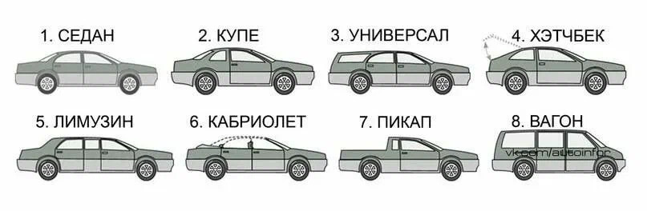

УРОК 1. ОБЩИЕ ПОЛОЖЕНИЯ
Дорога - приспособленная и используемая для движения транспортных средств полоса земли или поверхность искусственного сооружения.
Структура дороги:
1. Проезжая часть - асфальтный участок. Дорога может состоять как из одной, так и из нескольких проезжей частей.
2. Разделительная полоса - участок, отделённый газоном и бордюром или просто разметкой (тогда расстояние примерно равно ширине автомобиля). Двойная сплошная линия - не является разделительной полосой (расстояние между двумя сплошными линиями равно ширине одной сплошной линией). Водителю запрещено занимать сразу несколько полос!
3. Тротуар - часть дороги, предназначенная для движения пешеходов, движение транспортных средств по ним запрещено.
4. Обочина - часть дороги, не предназначенная для движения, служит только для остановки. На ней может отсутствовать асфальтное покрытие (тогда вместо неё будет гравий) или может иметь асфальтное покрытие (тогда отделена сплошной линией).
5. Трамвайные пути.
Перекрёсток - пересечение, примыкание или разветвление дорог на одном уровне.
Выезд и прилегающие территории не являются перекрёстками.
Перекрёсток может иметь несколько пересечений.
Дороги по отношению друг к другу: равнозначные и неравнозначные.
Главная дорога - дорога, на которой водитель имеет преимущество перед теми, кто на второстепенной дороге.

Если знаки отсутствуют, главной дорогой считается та дорога, имеющая твёрдое покрытие (асфальт, гравий, бетон) по отношению к грунтовой дороге.
Обе дороги равнозначные, если они обе имеют твёрдое покрытие.
Выезды - всегда второстепенные.
Уступить дорогу - значит не создавать помех! Водитель не должен начинать, продолжать, возобновлять дижение, осуществлять какой-либо манёвр, если это вынудит других участников движения, пользующихся преимуществом по отношению к нему, изменить направление движения или скорость.
Транспортное средство - устройство, которое предназначено для перевозки по дорогам людей и грузов.
Виды транспортных средств:
1. Механические - транспортные средства, которые приводятся в движение с помощью двигателя (легковые и грузовые автомобили, мотоциклы, трактора, мопеды).
1.1) Маршрутные - общего пользования. Двигаются по маршруту, имеют места остановок. (Автобус, троллейбус и трамвай. Маршрутное такси не является маршрутным транспортным средством).
1.2) Немаршрутные.
2. Немеханические - велосипеды.
Фактическая масса - масса транспортного средства в конкретный момент времени.
Разрешённая максимальная масса - масса транспортного средства с грузом, водителем и пассажирами (постоянная).
Остановка - преднамеренное прекращение движения на время не более 5 минут (или более 5 минут, но для посадки/высадки пассажиров или погрузки/отгрузки товаров).
Стоянка - преднамеренное прекращение движения на время более 5 минут (парковка). Не связано с погрузкой товара или посадкой пассажиров.
Вынужденная остановка - если транспортное средство неисправно или препятствие на дороге.
Препятствие на дороге - это неподвижный объект на полосе движения (неисправное или повреждённое транспортное средство, дефект проезжей части, посторонние предметы), не позволяющий продолжить движение по этой полосе (остановка перед пешеходном перекрёстком - не является препятствием).
При посадке в автомобиль, стоящий у тротуара или на обочине, его необходимо обойти спереди, чтобы видеть автомобили, движущиеся в полосе, и контролировать обстановку. А при высадке из автомобиля, после остановки у тротуара или на обочине его нужно обходить сзади, чтобы также идти навстречу движению транспортного потока.
Остановочный путь - расстояние, пройденное транспортным средством с момента обнаружения водителем опасности до полной остановки.
Обгон - опережение одного или нескольких транспортных средств, связанное с выездом на полосу (сторону проезжей части), предназначенную для встречного движения, и последующим возвращением на ранее занимаемую полосу (сторону проезжей части).
Неудовлетворительная видимость:
1. Недостаточная видимость - это видимость дороги менее 300 метров в условиях тумана, дождя, снегопада и в сумерки
2. Ограниченная видимость - видимость водителем дороги, ограниченная рельефом местности, геометрическими параметрами дороги, растительностью, строениями, сооружениями или другими объектами.
Россия - правостороннее движение.
В случае вынужденной остановки ТС или ДТП вне населённых пунктов в тёмное время суток либо в условиях ограниченной видимости при нахождении на проезжей части или обочине водитель обязан быть одетым в куртку, жилет с полосами световозвращающего материала, соответствующих требованиям ГОСТа.
УРОК 2. ДОРОЖНЫЕ ЗНАКИ
БЛОК 0. ОБЩАЯ ИНФОРМАЦИЯ
Всего существует более 270 знаков.

Группы знаков:
1. Предупреждающие - предупреждают водителя об опасном участке дороги впереди.
2. Знаки приоритета - устанавливают очерёдность проезда различных участков дорог при отсутствии светофора.
3. Запрещающие - запрещают отдельные действия и манёвры.
4. Предписывающие - указывают водителю определённый (обязательный) порядок движения.
5. Знаки особых предписаний - вводят на дороге определённые режимы движения.
6. Информационные - информирует о расположении различных объектов.
7. Знаки сервиса - информируют о расположении объектов, непредусмотренных информационными знаками.
8. Знаки дополнительной информации (таблички) - дополняют/уточняют действия других знаков, с которыми они одновременно установлены.
БЛОК 1. ПРЕДУПРЕЖДАЮЩИЕ ЗНАКИ
Вид: красная рамка, белый фон, чёрная символьное обозначение (чаще всего треугольные).
Иногда фон может быть жёлтым. Это значит, что знак установлен временно в связи с производством дорожных работ.
В ситуации, когда временные знаки противоречат постоянным, водитель должен руководствоваться временными знаками!
Предупреждающие знаки устанавливают заранее (в населённом пункте: за 50-100 метров; вне населённого пункта: за 150-300 метров) до опасного участка.
При виде данного знака, водитель должен быть готовым к соответствующей опасности и снизить скорость.

Виды предупреждающих знаков:
1.1 «Железнодорожный переезд со шлагбаумом» - предупреждает о закрытом или закрывающемся шлагбауме. Необходимо всегда убедится в отсутствии приближающегося поезда (так как шлагбаум может быть неисправен)!
1.2 «Железнодорожный переезд без шлагбаума» - водитель обязан убедится в отсутствии приближающегося поезда.
Знаки 1.1 и 1.2 будут дублироваться: первый раз ставится на расстоянии 150-300 метров от переезда, а второй раз - на расстоянии 50-100 метров.
1.3.1 «Однопутная железная дорога» и 1.3.2 «Многопутная железная дорога» - устанавливают непосредственно перед железнодорожными переездами, которые не оборудованы шлагбаумами. Информируют о том, сколько железнодорожных путей необходимо пересечь (1.3.1 - один путь; 1.3.2 - 2 и более пути).
1.4.1, 1.4.2, 1.4.3, 1.4.4, 1.4.5, 1.4.6 «Приближение к железнодорожному переезду» - устанавливаются только вне населённых пунктов. Первыми устанавливаются знаки с тремя полосами на противоположных сторонах дороги (на одной опоре со знаками 1.1 или 1.2) на расстоянии 150-300 метров. Вторыми - с двумя полосами на расстоянии 100-200 метров. Третьими - с одной полосой на расстоянии 50-100 метров.
1.5 «Пересечение с трамвайной линией» - трамвайная линия пересекает дорогу вне перекрёстка. Водитель должен уступить дорогу трамваю. Может быть не установлен, если появление травмая ожидаемо.
1.6 «Пересечение равнозначных дорог» - перекрёсток обнаруживается на расстоянии менее 150 метров вне населённых пунктов и менее 50 метров в населённых пунктах. Предупреждает, что очерёдность проезда определяется не сигналами светофора и не знаками приоритета, а по правилу правой руки, то есть водитель А при движении прямо должен уступить дорогу водителю Б, который приближается к нему с правой стороны.
1.7 «Пересечение с круговым движением» - предупреждает о приближении к перекрёстку с круговым движением. Применяется вне населённых пунктов всегда и в населённых пунктах, но если перекрёсток не виден с расстоянии 50 метров.
1.8 «Светофорное регулирование» - предупреждает когда впереди регулируемый пешеходный переход, регулируемый перекрёсток, участок дороги со специальными светофорами (например, реверсивными). В населённых пунктах устанавливается только, когда видимость светофора менее 100 метров. Вне населённых пунктах устанавливается всегда.
1.9 «Разводной мост» - устанавливается перед всеми разводными мостами и паромными переправами.
1.10 «Выезд на набережную» - устанавливают на дорогах, которые приводят к набережной или к берегу водоёма.
Знаки 1.9 и 1.10 будут дублироваться: первый раз ставится на расстоянии 150-300 метров от переезда, а второй раз - на расстоянии 50-100 метров.
1.11.1 и 1.11.2 «Опасный поворот» - 1.11.1 предупреждает, что опасный поворот направо, а 1.11.2 - налево. Предупреждают, что впереди закругление дороги малого радиуса.
1.12.1 и 1.12.2 «Опасные повороты» - предупреждают о приближении к опасным поворотам (2 и более). 1.12.1 говорит, что первый поворот будет направо, 1.12.2 - налево.
1.13 «Крутой спуск» и 1.14 «Крутой подъём» - обозначаются только наиболее опасные спуски/подъёмы, то есть затяжные, крутые или совмещённые с опасными поворотами.
1.15 «Скользкая дорога» - предупреждает, что далее начинается участок дороги с низким коэффициентов сцепления шин с поверхностью дороги.
1.16 «Неровная дорога» - сообщает, что впереди участок дороги с выбоинами, ямами или волнистостью.
1.17 «Искусственная неровность» - сообщает о приближении к искусственной неровности.
1.18 «Выброс гравия» - предупреждаем об участке дороги, где гравий вылетает из-под колёс транспортных средств. Водителю необходимо увеличить боковой интервал до встречных автомобилей и увеличить дистанцию до движущихся впереди транспортных средств.
1.19 «Опасная обочина» - применяется на дорогах, на которых состояние обочин не соответствует государственным стандартам.
1.20.1, 1.20.2, 1.20.3 «Сужение дороги» - 1.20.1 предупреждает о сужении дороги с двух сторон, 1.20.2 - о сужении справа, 1.20.3 - о сужении слева. Дорога сужается более, чем на половину метра вне населённых пунктов или на 1 и более полосу в населённых пунктах.
1.21 «Двустороннее движение» - устанавливается перед окончанием дороги с односторонним движением. Предупреждает о конце, но не означает конец. Сразу за ним двустороннее движение не начнётся!
1.22 «Пешеходный переход» - предупреждает о приближении к нерегулированному пешеходному переходу. В населённых пунктах устанавливается только, когда видимость перехода менее 150 метров. Вне населённых пунктах устанавливается всегда.
1.23 «Дети» - устанавливается вблизи детских учреждений или на участках, часто пересекаемых детьми. Первый знак устанавливается за 100 метров до опасного участка. Второй - за 50 метров.
1.24 «Пересечение с велосипедной дорожкой» - устанавливается перед участками дороги, где велосипедная дорожка пересекает проезжую часть вне перекрёстка.
1.25 «Дорожные работы» - предупреждает, что на проезжей части - люди (рабочие) и что на дороге рабочая техника и ограждения. Дублиурется.
1.26 «Перегон скота» - применяется на участках дорог рядом с фермами, пастбищами. На проезжей части возможно появление домашних животных.
1.27 «Дикие животные» - устанавливают, на участках дорог, где возможно появление диких животных. Объезд животного следует выполнять со стороны задней части животного!
1.28 «Падение камней» - устанавливают, на участках дорог, где возможны оползни, обвалы, лавины. На дороге могут находится камни и завалы.
1.29 «Боковой ветер» - сообщает, что на дороге возможен сильный боковой ветер, который может отклонить автомобиль от курса.
1.30 «Низколетящие самолёты» - устанавливают вблизи аэропортов. Самолёты и вертолёты пролетают на небольшой высоте, что приводит к сильному отвлекающему шуму.
1.31 «Тоннель» - устанавливается перед теми тоннелями, в которых отсутствует искусственное освещение.
1.32 «Затор» - временный знак, предупреждающий о заторе впереди, но который ещё можно объехать.
1.33 «Прочие опасности» - применяется на участках дорог, вид опасности которых не предусмотрен предыдущими знаками.
1.34.1, 1.34.2, 1.34.3 «Направление поворота» - устанавливают на поворотах малого радиуса. 1.34.3 устанавливают на Т-образных поворотах.
БЛОК 2. ЗНАКИ ПРИОРИТЕТА
Применяются для определения очерёдности проезда либо перекрёстков и пересечений проезжих частей, либо узких участков дорог.

Виды знаков приоритета:
2.1 «Главная дорога» - в населённом пункте устанавливается на каждом перекрёстке, где есть главная дорога. Если знак применён с табличкой, то главная дорога будет менять своё направление! Если таблички нет, то главная дорога идёт пряма до знака 2.2.
2.2 «Конец главной дороги» - после этого знака дорога теряет статус главной. За этим знаком может начинаться либо второстепенная дорога, либо равнозначная.
2.3.1 «Пересечение со второстепенной дорогой» и 2.3.2-2.3.7 «Примыкание второстепенной дороги» - предупреждают, что впереди участок неравнозначной дороги. Жирная линяя на знаке - главная дорога, узкая - второстепенная. Если водитель видит этот знак, значит он находится на главной дороге. Устанавливаются заблаговременно.
2.4 «Уступите дорогу» - устанавливается непосредственно перед перекрёстком. Водителю необходимо уступить дорогу транспортным средствам, движущимся по главной дороге. Знак имеет вид перевёрнутого треугольника для привлечения внимания издалека.
2.5 «Движение без остановки запрещено» - применяется на сложных перекрёстках, где не обеспечивается видимость транспортных средств, движущихся по главной дороги. Водитель обязательно должен остановиться перед краем пересекаемой проезжей части (или при наличии разметки останавливаться следует перед такой линией) и убедиться в отсутствии других транспортных средств. Также знак устанавливается перед железнодорожными переездами без светофорной сигнализации. Знак имеет вид восьмиугольника для привлечения внимания издалека.
2.6 «Преимущество встречного движения» и 2.7 «Преимущество перед встречным движением» - устанавливаются в узких местах, на противоположных сторонах, где невозможен безопасный разъезд двух транспортных средств. Знак 2.6 обязывает водителя А уступить проезд водителю Б, а знак 2.7 (установленный на противоположной стороне) предоставляет водителю Б право на первоочерёдное движение. Если водители уверены в безопасном разъезде, то оба транспортных средства могут двигаться одновременно (например, разъезд легкового автомобиля и мотоцикла).
БЛОК 3. ЗАПРЕЩАЮЩИЕ ЗНАКИ
Используются, чтобы ввести или отменить определённые ограничения.
В общем случае запрещающие знаки устанавливаются непосредственно в месте начала ограничения или в месте отмены ранее введённого ограничения.
Знаки 3.1, 3.2, 3.3, 3.18.1, 3.18.2, 3.19, 3.27, 3.34 не действуют на маршрутные транспортные средства, так как они следуют по определённому маршруту и действуют согласно ему.
Знаки 3.2, 3.3, 3.5, 3.6, 3.7, 3.8 не действуют на транспортные средства организаций федеральной почтовой связи («Почта России», эмблема почты, белая диагональная полоса на синем фоне); на транспортные средства, обслуживающие предприятия, находящиеся в их зоне; на транспортные средства, принадлежащие граждан или обслуживающие граждан, проживающих в их зоне.
Знаки 3.28-3.30 не действуют на транспортные средства, управляемые инвалидами (на автомобиле должен быть соответствующий знак), на транспортные средства организаций федеральной почтовой связи и на легковые такси с включённым таксометром.
Знаки 3.2, 3.3, 3.28-3.30 не действуют на транспортные средства, управляемые инвалидами 1 и 2 групп или обслуживающие их.
Зона запрещающих знаков в общем случае распространяется от места их установки до ближайшего перекрёстка. Вне населённого пункта перекрёстками считаются только те пересечения, обозначенные знаками приоритета, если знаков приоритета нет, то это выезд с прилегающей территории.
Если в населённом пункте перекрёсток отсутствует, то зона знаков распростаняется от места их установки до конца населённого пункта.

Виды запрещающих знаков:
3.1 «Въезд запрещён» - запрещает въезд на территорию с одной стороны или с одного въезда. Обязательно должен быть въезд на территорию с другой стороны. Например, данный знак устанавливается с противоположной стороны дороги с одностороннем движением.
3.2 «Движение запрещено» - запрещает движение по всей территории, перед которой он установлен. Искать другой въезд бесполезно.
3.3 «Движение механических транспортных средств запрещено» - запрещает движение легковым автомобилям, мотоциклам, грузовым автомобилям, автобусам, троллейбусам, трамваям, тракторам - то есть ВСЕМ механическим транспортным средствам. В общем случае под этот знак могут проехать только велосипедисты.
3.4 «Движение грузовых транспортных средств запрещено» - цифра на знаке подразумевает разрешённую максимальную массу, то есть данный знак запрещает движение транспортным средствам, с большей разрешённой максимальной массой, чем указано на знаке. Если на знаке нет цифры, то имеется в виду разрешённая максимальная масса 3.5 тонны. Не действует на транспортные средства почтовой связи.
3.5 «Движение мотоциклов запрещено»
3.6 «Движение тракторов запрещено» - запрещает движение тракторов и самоходных машин.
3.7 «Движение с прицепом запрещено» - запрещает движение грузовым автомобилям (всем, даже самым маленьким), буксирующим прицеп. Легковым автомобилям, буксирующим прицеп, в силу своей маленькой длины, разрешается проехать под этот знак. Данный знак запрещает буксировку любых транспортных средств, так как при буксировке самая малая длина связующего длина равна 4 метра, то есть в сумме легковые автомобили будут давать примерно 12 метров, а это повлечёт проблемы с движением из-за большой длины.
3.8 «Движение гужевых повозок запрещено», 3.9 «Движение на велосипедах запрещено», 3.10 «Движение пешеходов запрещено»
3.11 «Ограничение массы» - устанавливается перед сооружениями, имеющими ограниченную несущую способность (мосты, ледовые переправы). Запрещает движением транспортным средствам, общая фактическая масса которых больше массы, указанной на знаке. Подразумевает фактическую массу.
3.12 «Ограничение массы, приходящейся на одну ось транспортного средства» - часто устанавливается временно (осенью или весной) для предотвращения преждевременного разрушения дороги. Подразумевает фактическую массу. У двухосного транспортного средства на переднюю часть приходится 1/3 всей массы, а на заднюю 2/3. У трёхосного на каждую часть приходится 1/3 всей массы.
3.13 «Ограничение высоты» - запрещает движение транспортным средствам, фактическая высота которых больше высоты, указанной на знаке. Устанавливается, например, перед эстакадой.
3.14 «Ограничение ширины» - запрещает движение транспортным средствам, фактическая ширина которых больше ширины, указанной на знаке. Устанавливается, например, перед тоннелем.
3.15 «Ограничение длины» - запрещает движение транспортным средствам, фактическая длина которых больше длины, указанной на знаке. Если транспортное средство буксирует прицеп, то считается суммарная длина (длина транспортного средства + длина сцепного устройства + длина прицепа). Устанавливается на дорогах с тесной застройкой или на дорогах с узкой проезжей частью.
3.16 «Ограничение минимальной дистанции» - применяется перед въездом на сооружения с ограниченной несущей способностью или, например, на горных дорогах, где возможны сходы лавин.
3.17.1 «Таможня» - запрещает проезд без остановки у таможни, проезд возможен только при проверки документов и груза у таможни.
3.17.2 «Опасность» - часто является временным. Запрещает движение всех без исключения транспортных средств, потому что дальнейшее движение опасно для здоровья. Например, если вдоль дороги горит лес или на дороге перевернулась цистерна с химически опасными веществами.
3.17.3 «Контроль» - запрещает движение без остановки на контрольно-пропускном пункте.
3.18.1 «Поворот направо запрещён», 3.18.2 «Поворот налево запрещён» - действуют только на ближайшее пересечение проезжих частей, перед которыми они установлены.
3.19 «Разворот запрещён»
3.20 «Обгон запрещён» - запрещает обгон любым транспортным средствам. Устанавливается в зонах повышенной опасности столкновения со встречными транспортными средствами. Исключение: знак разрешает выполнить обгон тихоходных транспортных средств с соответствующим опознавательным знаком, обгон гужевых повозок и обгон двухколёсных транспортных средств.
3.21 «Конец зоны запрещения обгона» - отменяет действие знака 3.20.
3.22 «Обгон грузовым автомобилям запрещён» - действует только на грузовые автомобили с разрешённой максимальной массой более 3,5 тонн. Не имеет исключений.
3.23 «Конец зоны запрещения обгона грузовым автомобилям» - отменяет действие знака 3.22.
3.24 «Ограничение максимальной скорости» - запрещает водителям двигаться со скоростью большей, чем указана на знаке. Зона действия знака, установленного перед населённого пункта, распространяется от места установки до начала населённого пункта.
3.25 «Конец зоны ограничения максимальной скорости» - отменяет действие знака 3.25, но не отменяет общие ограничения скорости: в населённых пунктах не более 60 км/ч, а вне населённых пунктов не более 90 км/ч.
3.26 «Подача звукового сигнала запрещена» - запрещает всегда, кроме случая, если звуковой сигнал использован для предотвращения ДТП. Применяется вблизи домов отдыха, санаториев и т.д.
3.27 «Остановка запрещена» - запрещает любое преднамеренное прекращение движения. Такие участки дорог необходимо проезжать не задерживаясь. Распространяется только на ту часть дороги, на которой он установлен.
3.28 «Стоянка запрещена» - запрещает только стоянку, но не запрещает остановку.
Знаки 3.27 и 3.28 различаются количество полос: чем строже ограничение (остановка), тем больше полос (2).
3.29 «Стоянка запрещена по нечётным числам месяца», 3.30 «Стоянка запрещена по чётным числам месяца» - запрещают только стоянку. Полосы - римские цифры. Могут быть установлены на противоположных сторонах (на одной установлен 3.29, на другой - 3.30), например, для уборки улиц. При одновременном применении знаков на противоположных сторонах, они оба перестают действовать в период времени с 21:00 до 24:00, чтобы водители успели перегнали автомобили (если, например, они поставили их в 21:00 21 числа, то в 09:00 22 числа, если они не перегонят автомобили - они будут нарушать правила, для этого в указанный период, водители должны успеть перегнать автомобили на противоположную сторону).
Знаки 3.27-3.30 имеют синий фон, чтобы дать понять водителю, что ограничение связано с остановкой или стоянкой.
3.31 «Конец зоны всех ограничений» - отменяет действия только знаков 3.16, 3.20, 3.22, 3.24, 3.27, 3.28, 3.29, 3.30.
3.32 «Движение транспортных средств с опасными грузами запрещено» - запрещает движения транспортных средств с опознавательными знаками об опасном грузе.
3.33 «Движение транспортных средств с взрывчатыми и легковоспламеняющимися грузами запрещено» - запрещает движения транспортных средств с указанными грузами. Перевозка канистр бензина или газового баллона в багажнике не попадает под данные ограничения.
3.34 «Движение автобусов запрещено» - не распространяется на школьные автобусы.
3.35 «Движение на средствах индивидуальной мобильности запрещено» - действует только в одном направлении.
БЛОК 4. ПРЕДПИСЫВАЮЩИЕ ЗНАКИ
Вид: круглая форма, синий фон и белое символьное обозначение.
Обязывают водителя выполнять дейтсвя.

Виды предписывающих знаков:
4.1.1 «Движение прямо», 4.1.2 «Движение направо», 4.1.3 «Движение налево», 4.1.4 «Движение прямо или направо», 4.1.5 «Движение прямо или налево», 4.1.6 «Движение направо или налево» - обязывают водителя двигаться только в направлении, указанном на знаке. Применяются на перекрёстках. Нужно учитывать ряд, в котором находишься для выполнения определённого действия. Действия знаков распространяются только на ближайшие пересечения, перед которыми они установлены.Не действуют на маршрутные транспортные средства.
4.1.3 «Движение налево», 4.1.5 «Движение прямо или налево», 4.1.6 «Движение направо или налево» - кроме поворота разрешают выполнить разворот.
4.1.1 «Движение прямо» - может применяться вне перекрёстков, тогда его зона действия будет распространяться от места установки до ближайшего перекрёстка, причём на перекрёсток действие распространяться не будет. В случае установки вне перекрёстков, разрешает выполнить поворот направо во дворы и прилегающие территории.
4.2.1 «Объезд препятствия справа», 4.2.2 «Объезд препятствия слева», 4.2.3 «Объезд препятствия справа или слева» - устанавливаются на элементах дорожных сооружений (островки безопасности, колонны эстакад) или в начале разделительной полосы. Могут быть применены во время дорожных работ.
4.3 «Круговое движение» - обязывает двигаться в направлении стрелок на знаке.
4.4.1 «Велосипедная дорожка», 4.4.2 «Конец велосипедной дорожки» - обозначение дорожки, предназначенной для движения только велосипедистов.
4.5.1 «Пешеходная дорожка» - обозначение дорожки, предназначенной для движения пешеходов (в особых случаях: для движения велосипедистов или лиц, использующих средства индивидуальной мобильности).
4.5.2 «Велопешеходная дорожка с совмещённым движением», 4.5.2 «Конец велопешеходной дорожки с совмещённым движением» - разрешено одновременное движение пешеходов и велосипедистов.
4.5.4 и 4.5.5 «Велопешеходная дорожка с разделением движения», 4.5.6 и 4.5.7 «Конец велопешеходной дорожки с разделением движения» - полосы отделены друг от друга.
4.6 «Ограничение минимальной скорости» - обязывает водителей двигаться со скоростью не меньшей, чем указана на знаке. На полосы с данным знаком могут выезжать только транспортные средства, способные поддерживать данный скоростной режим.Действие знака распространяется от места установки до ближайшего перекрёстка или до знака 4.7.
4.7 «Конец ограничения минимальной скорости» - отменяет действие знака 4.6.
4.8.1, 4.8.2 и 4.8.3 «Направления движения транспортных средств с опасными грузами» - действуют только на транспортных средства, имеющие опознавательные знак опасного груза.
БЛОК 5. ЗНАКИ ОСОБЫХ ПРЕДПИСАНИЙ
Устанавливаются, чтобы ввести или отменить на дороге определённые режимы движения.
Режим движения - всегда комплекс или целый ряд предписаний.

Виды знаков особых предписаний:
5.1 «Автомагистраль» - дорога наивысшего качества, высокая скорость движения и высокая безопасность, на ней исключены пересечения дорог на одном уровне, вместо них используются эстакады и разноуровневые развязки, также на автомагистралях отсутствуют наземные пешеходные переходы. На автомагистралях запрещено движения транспортных средств, не способных поддерживать скорость более 40 км/ч.Максимальная скорость - 110 км/ч.
5.2 «Конец автомагистрали» - отменяет режим знака 5.1. Максимальная скорость сразу после знака - 90 км/ч.
5.3 «Дорога для автомобилей», 5.4 «Конец дороги для автомобилей» - дорога высокого качества исполнения, но ниже уровня автомагистрали. Действуют все те же правила, что и на автомагистрали, только максимальная скорость - 90 км/ч.
5.5 «Дорога с односторонним движением» - направление всего транспортного потока по всей ширине дороги будет организовано только в направлении, указанном на знаке. Часто устанавливают на узких улицах, где затруднён разъезд.Разворот на такой дороге запрещён!
5.6 «Конец дороги с односторонним движением» - устанавливается на перекрёстке, сразу за ним идёт обычная дорога с двусторонним движением. Так как на дороге с односторонним движением можно занимать всю ширину дороги, то перед выездом необходимо занять такое положение, чтобы правильно въехать на нужный ряд.
5.7.1 и 5.7.2 «Выезд на дорогу с односторонним движением» - применяются на перекрёстках, имеющих дорогу с односторонним движением, причём для водителя эта дорога будет идти в поперечном направлении. Разрешённые направления при знаке 5.7.1: направо, прямо и в обратном направлении.При знаке 5.7.2: налево, прямо и в обратном направлении.
5.8 «Реверсивное движение», 5.9 «Конец реверсивного движения» - особые дороги, на которых по одной или нескольким полосам направление движения может изменится на противоположное. На таких дорогах используют реверсивные светофоры. Полоса реверсивного движения может вообще не использоваться.
5.10 «Выезд на дорогу с реверсивным движением» - устанавливается перед перекрёстками, на которых дорога, идущая поперечно водителю, имеет реверсивное движение. Водитель, выполняя любой поворот на данной перекрёстке, сначала должен занять правую полосу. Занимать соседние можно только после того, как убедился, что они открыты и соответствуют твоего движению.
5.11.1 «Дорога с полосой для маршрутных транспортных средств», 5.12.1 «Конец дороги с полосой для маршрутных транспортных средств» - на такой дороге сплошной линией отделена полоса (обозначенная буквой «А») для движения только маршрутных транспортных средств и легковых такси. Указанные транспортные средства будут двигаться навстречу основному потоку. Для немаршрутных транспортных средств данная дорога является дорогой с односторонним движением.
5.11.2 «Дорога с полосой для велосипедистов», 5.12.2 «Конец дороги с полосой для велосипедистов» - работает по аналогии со знаком 5.11.1. На такой дороге отделена полоса для велосипедистов и мопедов.
5.13.1 и 5.13.2 «Выезд на дорогу с полосой для маршрутных транспортных средств», 5.13.3 и 5.13.4 «Выезд на дорогу с полосой для велосипедистов» - устанавливается перед перекрёстками, на которых дорога, идущая поперечно водителю, имеет полосу для указанных на знаке транспортных средств.
5.14 «Полоса для маршрутных транспортных средств», 5.14.1 «Конец полосы для маршрутных транспортных средств» - полоса, в которой попутно основному потоку осуществляется движением маршрутных транспортных средств. Как правило данная полоса располагается в крайнем правом ряду.
5.15.1 «Направления движения по полосам», 5.15.2 «Направления движения по полосе» - устанавливаются перед перекрёстками, чтобы организовать движение на нём оптимальным образом. 5.15.1 устанавливается 1 раз и указываем число полос и направление движение по ним. Знаки 5.15.2 устанавливаются над каждой полосой и действуют только на неё. Не действует на маршрутные транспортные средства!Действуют на весь перекрёсток, а не на отдельные пересечения.Знаки со стрелкой налево разрешают также и разворот, но только из крайней левой полосы.
5.15.3 «Начало полосы» - 1 знак на фото организует полосу торможения (например, для автобуса, чтобы произвести посадку/выгрузку пассажиров). 2 знак организует дополнительную полосу, которые не могут ехать быстрее, чем указано на знаке.
5.15.4 «Начало полосы»
5.15.5 и 5.15.6 «Конец полосы»
5.15.7 «Направления движения по полосам» - применяются, когда число полос в попутном направлении не равно числу полос во встречном направлении.
5.15.8 «Число полос» - указывает число полос и действующих скоростных режим на каждой полосе.
5.16 «Место остановки автобуса и (или) троллейбуса», 5.17 «Место остановки трамвая» - около таких знаков обычно находятся пассажиры, ожидающие маршрутные транспортные средства, поэтому в этих местах запрещены разворот, движение задним ходом и остановка.
5.18 «Место стоянки легковых такси»
5.19.1 и 5.19.2 «Пешеходный переход» - обозначают границы пешеходного перехода, если разметка «зебра» отсутствует. На ближней границе устанавливается знак 5.19.1, а на дальней - 5.19.2. Между ними находится зона пешеходного перехода.
5.20 «Искусственная неровность»
5.21 «Жилая зона», 5.22 «Конец жилой зоны» - применяются на тех улицах, где совсем запретить движение транспорта нецелесообразно, но при этом необходимо обеспечить комфортные условия пешеходам. В жилых зонах разрешённая максимальная скорость - 20 км/ч, пешеходы могут двигаться как по тротуарам, так и по всей ширине проезжей части и при этом имеют преимущество перед водителями.
5.23.1 и 5.23.2 «Начало населённого пункта», 5.24.1 и 5.24.2 «Конец населённого пункта» - устанавливаются на фактической границе застройки населённого пункта. Разрешённая максимальная скорость - 60 км/ч. 5.23.2 обозначают застройки, которые не входят в населённые пункты (дачные посёлки, отдельно стоящие предприятия).
5.25 «Начало населённого пункта», 5.26 «Конец населённого пункта» - обозначает границы населённого пункта, в котором не действуют правила движения в населённых пунктах.
5.27 «Зона с ограничением стоянки», 5.28 «Конец зоны с ограничением стоянки» ; 5.29 «Зона регулируемой стоянки», 5.30 «Конец зоны регулируемой стоянки» ; 5.31 «Зона с ограничением максимальной скорости», 5.32 «Конец зоны с ограничением максимальной скорости» ; 5.33 «Пешеходная зона», 5.34 «Конец пешеходной зоны»
Зона - территория, а не одна сторона дороги, то есть территория от места установки знака до отменяющего знака и одновременно от левой части дороги до правой. Запрещение не будет прерываться на перекрёстках.
БЛОК 6. ИНФОРМАЦИОННЫЕ ЗНАКИ
Информируют о расположении объектов (населённых пунктов, объездов, дорожных развязок).

Виды информационных знаков:
6.1 «Общее ограничение максимальной скорости» - устанавливается на всех контрольно-пропускных пунктах при въезде на территорию Российской Федерации. Устанавливается, чтобы проинформировать водителей о действующих ограничениях скорости: в населённых пукнтах - 60 км/ч, вне населённых пунктах - 90 км/ч, автомагистрали - 110 км/ч.
6.2 «Рекомендуемая скорость» - никак не ограничивает водителя, просто указывает безопасную скорость, но с какой скорость двигаться - должен решить водитель.
6.3.1 «Место для разворота» и 6.3.2 «Зона для разворота» - указывают места, где можно удобно и безопасно выполнить разворот, но ничего не обязывают. 6.3.2 указывают зону для разворота, которая располагается от места установки знака и продолжается на расстоянии, указанном на знаке. Не разрешают выполнять поворот налево!
Длина Лады Приоры - 4,5 метра. Значит 15 метров - это примерно 3 Лады Приоры.
6.4 «Парковка (парковочное место)» - указывает на площадку, предназначенную для стоянки (специальные территории и местные уширения («карман»)).
6.5 «Полоса для аварийной остановки» - применяется на затяжных спусках, совмещённых с крутыми поворотами, так как на таких спусках из-за длительного торможения у автомобиля возможен отказ тормозного механизма. Такая полоса имеет не асфальт, а керамзит, который создаёт сопротивление движению автомобиля и снижает его скорость. Полоса идёт вверх, что вызовет потерю скорости. Также в конце полосы может быть ограждение, в которые автомобиль врежется, если его не удалось остановить предыдущими способами.
6.6 «Подземный пешеходный переход» и 6.7 «Надземный пешеходный переход»
6.8.1, 6.8.2 и 6.8.3 «Тупик» - ничего не запрещают, просто информируют, что на дороге отсутствует сквозное движение. Водитель может заехать в тупик и выехать только из того места, где въехал.
6.9.1 «Предварительный указатель направлений» - сообщает информацию о том, в какую сторону необходимо повернуть на ближайшей развязке, чтобы добраться до определённого объекта. Цифра внизу знака указывает расстояние до развязки.
Зелёный фон знака означает, что движение к объекту будет осуществляться по автомагистрали.
Синий фон означает, что движение будет осуществляться по обычным дорогам вне населённых пунктах.
Белый фон означает, что движение будет проходить по территории населённого пункта.
Коричневый фон означает туристический объект.
6.9.2 «Предварительный указатель направления» - указывает одной направление, в отличие от знака 6.9.1.
6.9.3 «Схема движения» - применяется на сложных перекрёстках, в случае если отдельные манёвры или направления на нём запрещены. Сам знак ничего не запрещает, а указывает, как двигаться безопаснее.
6.10.1 «Указатель направлений» и 6.10.2 «Указатель направления» - устанавливаются в местах развязок, о приближении к которым информируют знаки 6.9.1 и 6.9.2. Данные знаки могут также указывать расстояние до объекта. Знаки 6.10.2 выполняются в виде стрелок.
6.11 «Наименование объекта» - применяется для иных объектов, чем населённые пункты. Могут быть обозначены речи, озёра, достопримечательности. В населённых пунктах знак имеет белый цвет, вне населённых пунктах - синий. Коричневый фон означает туристический объект.
6.12 «Указатель расстояний» - указывает расстояние до объектов, названия которых представлены на знаки, но ничего не сообщает о направлении.
6.13 «Километровый знак» - указывает расстояние в километрах от одного крупного населённого пункта до другого. Могут служить в качестве ориентира.
6.14 и 6.15 «Номер маршрута» - указывают номер дороги (такой же, как в атласе дорог и в навигаторе). 6.14.2 также указывает направлении дороги с указанным номером.
6.15.1, 6.15.2 и 6.15.3 «Направление движения для грузовых автомобилей» - применяются на перекрёстках, где движение грузовых автомобилей запрещено в некоторых направлениях. Они указывают рекомендуемое движение для водителей данных автомобилей.
6.16 «Стоп-линия» - указывает то место, где водитель должен обязательно остановиться при запрещающем сигнале светофора или регулировщика. Водитель должен остановится не дальше данного знака.
6.17 «Схема объезда» - указывает направление объезда участка дороги, который временно закрыт для движения. Въезд на такой участок будет закрыт с помощью запрещающих знаков.
6.18.1, 6.18.2 и 6.18.3 «Направление объезда» - указывают направлении объезда участка дороги, закрытого, например, в связи с дорожными или строительными работами. Применяются в качестве дополнения к знаку 6.17.
6.19.1 и 6.19.2 «Предварительный указатель перестроения на другую проезжую часть» - как правило применяются в паре. Устанавливаются, когда одна из проезжих частей временно закрыта для движения. Тогда в начале выставляется знак 6.19.1, который сообщает водителю, что ему придётся перестроиться на проезжую часть встречного направления, а для водителей встречного направления устанавливаются временные запрещающие знаки и разметка. После окончания закрытого участка, перед ближайшем разрывом разделительной полосы будет установлен знак 6.19.2, который сообщает, что необходимо перестроиться обратно.
6.20.1 и 6.20.2 «Аварийный выход», 6.21.1 и 6.21.2 «Направление к аварийному выходу» - устанавливаются только в тоннелях. Знаки 6.20.1 и 6.20.2 указывают на сам выход, а 6.21.1 и 6.21.2 - направление к нему.
БЛОК 7. ЗНАКИ СЕРВИСА
Информируют о расположении объектов, полезных для водителей.

Виды знаков сервиса:
7.1 «Пункт медицинской помощи» - место медицинского пункта с фельдшером.
7.2 «Больница» - учреждение с более квалифицированной помощью.
7.3 «Автозаправочная станция» - можно пополнить запас топлива, приобрести масла и расходные запчасти (фильтры, лампы, охлаждающие жидкости, свечи зажигания). Цифра внизу знака указывает расстояние от знака до заправки.
7.4 «Техническое обслуживание автомобилей» - указывает расположение автосервиса, в котором может быть оказан ремонт автомобиля. Цифра внизу знака указывает расстояние от знака до сервиса, а стрелка направление к нему.
7.5 «Мойка автомобилей»
7.6 «Телефон» - указывает место телефона-автомата. Полезен, в местах отсутствия сотовой связи. Телефоны-автоматы платные, оплата производится с помощью таксофонной карты.
7.7 «Пункт питания» - пункты общественно питания (столовая, кафе, закусочная).
7.8 «Питьевая вода» - естественный источник питьевой воды (ручей, колодец, родник).
7.9 «Гостиница или мотель» - мотель имеет выход из номеров сразу на парковочную площадку.
7.10 «Кемпинг» - лагерь под открытым небом, палаточный городок. Возможно имеются туалеты, источники питьевой воды, магазины, автомойки.
7.11 «Место отдыха» - место для отдыха водителей и пассажиров (беседки, навесы, скамейки и парковочная площадка).
7.12 «Пост дорожно-патрульной службы» - стационарный пост ДПС. Можно сообщить о ДТП.
7.13 «Полиция»
7.14 «Пункт контроля международных автомобильных перевозок» - место, где водители, участвующие в международном автомобильном движении, будут обязаны остановится по требованию сотрудников транспортной полиции.
7.15 «Зона приёма радиостанций, передающей информацию о дорожном движении» - сообщает частоту вещании и название радиостанции, передающей полезную информацию о дорожном движении (аварии, пробки, пути объезда, средняя скорость).
7.16 «Зона радиосвязи с аварийными службами» - сообщает о начале участка дороги, где возможна связь с аварийными службами в гражданском диапазоне. Такую связь могут иметь автомобили с рациями (дальнобойщики).
7.17 «Бассейн или пляж» - специально оборудованное место для купания.
7.18 «Туалет» - специально оборудованный общественный туалет.
7.19 «Телефон экстренной связи» - специальной телефон только для вызова оперативных служб. Позвонить в другое место невозможно.
7.20 «Огнетушитель», 7.21 «Автозаправочная станция с возможностью зарядки электромобилей»
БЛОК 8. ЗНАКИ ДОПОЛНИТЕЛЬНОЙ ИНФОРМАЦИИ (ТАБЛИЧКИ)
Никогда не применяются самостоятельно! Всегда работают в паре со знаками из других групп, уточняя и дополняя действие знаков, с которыми они применены.
.png)
Виды знаков дополнительной информации (табличек):
8.1.1 «Расстояние до объекта» - указывает расстояние от места установки знака до объекта на знаке, в связки с которым он установлен. Применяется со знаками, которые не устанавливаются заблаговременно (знак с табличкой ещё не вводит ограничения, а сообщает, что они будут введены через определённое количество метров. Само ограничение начнёт действовать при повторной установке знака, уже без таблички). Также применяются с предупреждающими знаками, если нужно предупредить водителя заранее, более чем за обычное расстояние.
8.1.2 «Расстояние до объекта» - применяется только в случае приближения к перекрёстку, на котором установлен знак 2.5.
8.1.3 и 8.1.4 «Расстояние до объекта» - применяются, когда объект располагается не прямо, а в стороне.
8.2.1 «Зона действия» - указывает протяжённость зоны действия знака, с которым она установлена. Знак начинает действовать от места установки и на протяжении расстояния, указанного на табличке. Зона действия не будет прерываться на перекрёстках.
8.2.2-8.2.6 «Зона действия» - применяются только со знаками 3.27, 3.28, 3.29, 3.30. 8.2.2 указывает протяжённость запрещения, 8.2.3 указывает, что в месте установки заканчивает зона запрещения (за этим знаком с данной табличкой ограничения не будут действовать), 8.2.4 указывает, что водитель находится в зоне действия знака (значит зона действия знака от одного перекрёстка до другого, между которыми он находится), 8.2.5 и 8.2.6 указывают направление и протяжённость запрещения (после этого знака водитель сразу попадает в зону ограничения).
8.3.1, 8.3.2, 8.3.3 «Направления действия» - указывают направление, в которое действует знак, с которым они связаны.
8.4.1 (только грузовые автомобили, массой более 3,5 тонн), 8.4.2 (только транспортные средства, буксирующие прицеп или другое транспортное средство), 8.4.3.1 (на электромобили и гибридные автомобили), 8.4.3.2 (на легковые автомобили и грузовые автомобили, массой менее 3,5 тонн), 8.4.4 (на маршрутные транспортные средства), 8.4.5 (на трактора и самоходные машины), 8.4.6 (на мотоциклы), 8.4.7.1 (на велосипеды), 8.4.7.2 (на средства индивидуальной мобильности), 8.4.8 (на транспортные средства, перевозящие опасные грузы) «Вид транспортного средства» - сообщают, что действие знака будет распространяться только на указанный вид транспортного средства.
8.4.9-8.4.16 «Кроме вида транспортного средства» - знаки действуют на все транспортные средства, кроме указанных на табличке.
8.5.1 «Субботние, воскресные и праздничные дни», 8.5.2 «Рабочие дни», 8.5.3 «Дни недели» - указывают дни, в которые действуют знак.
8.5.4 «Время действия» - указывает часы и минуты, в которые действует знак.
8.5.5, 8.5.6, 8.5.7 «Время действия» - указывают не только время, но и дни действия знака.
8.6.1-8.6.9 «Способ постановки транспортного средства на стоянку» - применяются только со знаком 6.4. 8.6.1 указывает, что все транспортные средства (без исключений) должны быть припаркованы параллельно краю проезжей части, остальные знаки разрешают парковку указанным способом только легковым автомобилям и мотоциклам (всем без исключения грузовым автомобилям, даже сделанные на базе легковых и пикапам (пикап - грузовой автомобиль), запрещена такая парковка).
8.7 «Стоянка с неработающим двигателем» - может применяться на парковках больниц, санаториев, магазинов. Не запрещает прогрев двигателя, который длится не более 5 минут.
8.8 «Платные услуги» - применяется на платных парковках.
8.9.1 «Ограничение продолжительности стоянки» - указывает максимальную продолжительность пребывания транспортного средства на стоянке.
Знаки 8.7, 8.8, 8.9.1 применяются только со знаком 6.4.
8.9.2 «Стоянка только для владельцев парковочных разрешений» - указывает, что на парковке могут размещаться только транспортные средства, владельцы которых имеют специальные разрешения на парковку, полученные в установленном порядке.
8.9.3 «Стоянка только транспортных средств дипломатического корпуса» - указывает, что на парковке могут размещаться только транспортные средства дипломатических представительств, консульских учреждений и международных организаций.
8.10 «Место для осмотра автомобилей» - применяется только со знаками 6.4 и 7.11. Сообщает, что на площадке будет присутствовать эстакада или смотровая яма.
8.11 «Ограничение разрешённой максимальной массы» - сообщает, что действие знака, с которым она установлена, распространяется только на транспортные средства, разрешённая максимальная масса которых больше, чем на табличке.
8.12 «Опасная обочина» - применяется со знаком 1.25. Сообщает, что съезд на обочину опасен, в связи с проведением дорожных работ.
8.13 «Направление главной дороги» - применяется на перекрёстке, если главная дорога меняет своё направление на нём. Жирная линия - главная дорога.
8.14 «Полоса движения» - указывает полосу, на которую будет распространятся действие знака.
8.15 «Слепые пешеходы» - применяется со знаками пешеходного перехода и со светофорами. Сообщает, что указанным переходом будут пользоваться незрячие пешеходы.
8.16 «Влажное покрытие» - сообщает, что действие знака распространяется только в период, когда покрытие дороги влажное.
8.17 «Инвалиды» - применяется со знаком 6.4. Обозначает специальную парковку для транспортных средств, имеющих специальный опознавательный знак инвалида. Другие транспортные средства не имеют права здесь парковаться.
8.18 «Кроме инвалидов»
8.19 «Класс опасного груза» - указывает номер класса опасного груза, на перевозку которого действует ограничение.
8.20.1 и 8.20.2 «Тип тележки транспортного средства» - применяются со знаком 3.12.
8.21.1, 8.21.2, 8.21.3 «Вид маршрутного транспортного средства» - применяются со знаком 6.4. Сообщают, что в этом месте водитель может остановить своё транспортное средство на стоянку и пересесть на метро или на маршрутное транспортное средство.
8.22.1, 8.22.2, 8.22.3 «Препятствие» - обозначают препятствие на дороге (например, дорожные сооружения). Применяются с предписывающими знаками, указывающими направление объезда препятствия.
8.24 «Работает эвакуатор» - сообщает, что в зоне действия знаков 3.27-3.30 осуществляется задержание транспортного средства, нарушившего их требования.
8.25 «Экологический класс транспортного средства» - указывает, что действия знаков 3.3-3.5, 3.18.1, 3.18.2, 4.1.1-4.1.6 распространяется на механические транспортные средства, экологический класс которых, указанный в регистрационных документах, ниже экологического класса, указанного на табличке или вообще не указан в документах. Действия знаков 5.29, 6.4, установленных с этой табличкой, распространяется на механические транспортные средства, экологический класс которых, указанный в регистрационных документах, соответствует или выше экологическому классу, указанному на табличке.
8.26 «Зарядка электромобилей»
УРОК 3. ДОРОЖНАЯ РАЗМЕТКА
БЛОК 0. ОБЩАЯ ИНФОРМАЦИЯ
Служит для визуального ориентирования водителей.
Может применяться как самостоятельно, так и в сочетании со знаками и светофорами.
Водители должны руководствоваться требованиями дорожных знаков, в том числе и временных, если они противоречат требованиям линий горизонтальной разметки!
Виды разметки:
1. Горизонтальная - наиболее часто используемая. Может быть постоянной или временной. Наносится непосредственно на поверхность дорожного полотна. Представляет собой линии, надписи, стрелки и символы.
2. Вертикальная - наносится на пролётные строения, опоры мостовых сооружений, торцевые поверхности тоннелей, ограждения, парапеты и бордюры. Служит для улучшения видимости тех элементов, на которые она нанесена.
БЛОК 1. ГОРИЗОНТАЛЬНАЯ РАЗМЕТКА

Цвета разметок:
1. Белая - применяется чаще всего.
2. Жёлтая - применяется в разметке 1.4, 1.10, 1.17.1, 1.17.2, 1.26.
3. Синяя - обозначает границы полос движения в пределах перекрёстка, а также, что зона парковки используется на платной основе.
4. Чёрная
5. Зелёная
6. Особый случай - оранжевая - всегда временная. Наносится, чтобы изменить порядок движения из-за проведения ремонтных или дорожных работ. Если она противоречит белой (постоянной) разметки, то нужно выполнять требования временной разметки!
Линии разметки не имеют специальных названий.
Виды горизонтальной разметки:
1.1 - («сплошная линия») разделяет транспортные потоки противоположных направлений и обозначает границы полос движения на опасных участках дорог. Также обозначение границ стояночных мест транспортных средств. Данную разметку запрещено пересекать.
1.2 - обозначает край проезжей части или границу участков проезжей части, на которые въезд запрещён. Сразу за этой разметкой находится обочина. Данная разметка - единственная сплошная линия, которую можно пересекать, но только если она находится справа от водителя!
1.3 - («двойная сплошная») разделяет транспортные потоки противоположных направлений на дорогах, имеющих 4 и более полос движения (либо 2-3 полосы, имеющие ширину более 3,75 метров). Данную разметку категорически запрещено пересекать (лишение прав).
1.4 - обозначает места, где запрещено выполнять остановку. Наносится либо у края проезжей части, либо по верху бордюра.
1.5 - разделяет транспортные потоки противоположных направлений на дорогах с 2-3 полосами, также она обозначает границы полос для движения в одном направлении. Данную разметку разрешено пересекать.
1.6 - наносится после прерывистой линии 1.5. Предупреждает о приближении к сплошной линии 1.1, которую нельзя пересекать. Но пока сплошная линия не началась, данную разметку можно пересечь.
1.7 - обозначает полосы движения в пределах перекрёстка или зону парковки. Такая разметка позволяет организовать параллельную парковку без привязки к жёстким требованиям к парковочному месту.
1.8 - обозначает границу между полосой разгона/торможения и основной полосой.
1.9 - обозначает границы полос движения, на которых осуществляется реверсивной регулирование.
1.10 - обозначают места, где запрещено выполнять стоянку. Наносится либо у края проезжей части, либо по верху бордюра.
1.11 - разделяет транспортные потоки противоположных или попутных направлений на тех участках дорог, где перестроение разрешено только из одной полосы.
1.12 - («стоп-линия») указывает место, где водитель должен остановится при запрещающем сигнале светофора или при наличии знака 2.5.
1.13 - указывает место, где водитель должен остановится, если он уступает дорогу транспортным средствам.
1.14.1 и 1.14.2 - («зебра») обозначает пешеходный переход и его границы. Пешеходы должны двигаться только в пределах ширины данной разметки. Стрелки на разметке 1.14.2 указывают направление, в котором должны двигаться пешеходы.
1.14.3 - обозначает диагональный пешеходный переход.
1.15 - обозначает место, где велосипедная дорожка пересекает проезжую часть.
1.16.1 - обозначает островки, которые разделяют транспортные потоки противоположных направлений или места для стоянки транспортных средств от велосипедных полос.
1.16.2 и 1.16.3 - обозначают направляющие островки в местах разделения или слияние транспортных потоков.
1.17.1 - обозначает места остановок маршрутных транспортных средств и стоянки такси.
1.17.2 - обозначает места остановки трамваев, если посадка/высадка осуществляется с проезжей части или с посадочной площадки, расположенной на ней.
1.18 - указывает разрешённое направление движения на перекрёстке по различным полосам. Разметка с изображением тупика означает, что поворот на ближайшую проезжую часть запрещён.
1.19 - предупреждает о приближении к сужению проезжей части или к линиям разметки 1.1 или 1.11.
1.20 - предупреждает о приближении к разметке 1.13.
1.21 - предупреждает о приближении к разметке «стоп-линия».
1.22 - указывает номер дороги или маршрута.
1.23.1 - обозначает специальную полосу для маршрутных транспортных средств.
1.23.2 - обозначает пешеходную дорожку или пешеходную части дорожки, предназначенной доя совместного движения пешеходов, лиц, использующих для передвижения средства индивидуальной мобильности и велосипедистов.
1.23.3 - обозначает велосипедную дорожку или велосипедную сторону велопешеходной дорожки, а также полосу для велосипедистов.
1.24.1-1.24.5 и 1.24.7 - дублируют соответствующие дорожные знаки.
1.25 - обозначает искусственную неровность на проезжей части.
1.26 - обозначает участок перекрёстка, на который запрещено выезжать (запрещено только если своим выездом водитель создаст помеху другим транспортным средствам), если впереди образовался затор.
БЛОК 2. ВЕРТИКАЛЬНАЯ РАЗМЕТКА

Выполняется только в виде сочетания белых и чёрных полос. Не бывает временной.
Виды вертикальной разметки:
2.1.1-2.1.3 - обозначают элементы дорожных сооружений, когда эти элементы предоставляют опасность для движущихся транспортных средств.
2.2 - обозначает нижний край тоннелей, мостов и путепроводов.
2.3 - обозначает круглые тумбы, установленные на разделительных полосах или островках безопасности.
2.4 - обозначает направляющие столбики, опоры ограждений.
2.5 - обозначает боковые поверхности ограждений дорог на закруглениях малого радиуса, крутых спусках и других опасных участках.
2.6 - обозначает боковые поверхности ограждений дорог на других участках, не представляющих опасности.
2.7 - обозначает бордюры на опасных участках и возвышающиеся островки безопасности.
УРОК 4. ОБЩИЕ ОБЯЗАННОСТИ ВОДИТЕЛЕЙ И ПЕШЕХОДОВ
БЛОК 1. ОБЩИЕ ОБЯЗАННОСТИ ВОДИТЕЛЕЙ
Обязанности водителей механических транспортных средств:
1. Водитель обязан иметь при себе и передавать для проверки (сотрудникам полиции) следующие документы: водительское удостоверение (соответствует тому транспортному средству, которым в данный момент управляет) (при утере водительского удостоверения необходимо иметь временное разрешение, которое действует только с паспортом); страховой полис обязательного страхования гражданской ответственности (ОСАГО), в котором должны быть указаны все лица, допущенные к управлению данным транспортным средством (заменяет доверенность, но доверенность может понадобится, когда водитель не будучи собственником получает автомобиль с платной парковки или штрафстоянки или при прохождении техосмотра); регистрационные документы на данное транспортное средство (при наличии прицепа - также регистрационные документы на прицеп). В установленных случаях нужно иметь: разрешение на осуществление деятельности по перевозки пассажиров и багажа легковым такси, путевой лист, лицензионную карточку и документы на перевозимый груз.
2. Все лица в транспортном средстве должны пристёгивать ремни безопасности. Запрещается перевозка непристёгнутых пассажиров. Водители мотоциклы должны быть в застёгнутом мотошлеме. Запрещается перевозка пассажиров без застёгнутого мотошлема.
3. Водитель обязан перед выездом проверить, а в пути обеспечить исправное техническое состояние транспортного средства. Запрещено начинать движение при отказе тормозной системы, неисправности рулевого управления, неисправности сцепного устройства при буксировки прицепа, негорящих фар и задних габаритных огней (с негорящими фарами запрещено начинать движение только в тёмное время суток или в условиях недостаточной видимости), недействующем со стороны водителя стеклоочистителем (только во время дождя и снегопада).
4. Проходить освидетельствование на состояние алкогольного опьянения и медицинского освидетельствование на состояние опьянения. Если сотрудник ГИБДД выявил у водителя признаки опьянения (запах алкоголя изо рта, нарушение речи, неустойчивость позы, резкое изменение окраски кожных покровов лица, нарушение, несоответствующее обстановке), то это является достаточным основание для отстранения от управления. Отстранение проходит в присутствии двух понятых, при этом составляется протокол, после этого происходит освидетельствование на состояние алкогольного опьянения. При освидетельствовании учитывается погрешность алкотестера. При подтверждении составляется акт об освидетельствовании на состояние алкогольного опьянения, который подписывается инспектором, водителем и понятыми. Медицинское освидетельствование не является обязательным, но является законным шансом избежать лишения водительского удостоверения, если водитель не согласен с результатом алкотестера. Протокол о направлении на медицинское освидетельствование на состояние опьянения составляется в присутствии понятых. Сотрудники ГИБДД обязаны проводить водителя в медицинское учреждение, а если освидетельствование не выявило опьянения, то они должны проводить водителя обратно к его транспортному средству. Потребовать пройти освидетельствование могут не любые сотрудники полиции, а только должностные лица, которым предоставлено право государственного надзора и контроля безопасности дорожного движения и эксплуатации транспортного средства.
5. Водитель обязан предоставить своё транспортное средство сотрудникам полиции, органам федеральным службы охраны Российской Федерации, органам федеральной службы безопасности Российской Федерации, медицинским и фармацевтическим работникам (для перевозки граждан в ближайшее лечебное учреждение в случаях, угрожающих их жизни). Тогда те лица, которые воспользовались транспортным средством, должны по просьбе водителя выдать ему специальную справку с указанием своей фамилии, должности, номера служебного удостоверения, наименования организации.
6. Водитель обязан выполнять требования сигналов регулировщика. К регулировщикам относятся не только сотрудники полиции, но и работники дорожно-эксплуатационных служб, дежурные на железнодорожных переездах и паромных переправах, сотрудники военно-автомобильной инспекции, при исполнении ими своих обязанностей. Регулировщик всегда должен быть в форменной одежде, иметь отличительный знак и экипировку, а также предъявить по требованию водителя своё служебное удостоверение.
Категории и подкатегории механических транспортных средств:

1. «M» - позволяет управлять мопедами и квадрициклами. Имея более высшую категорию, можно отдельно не обучаться на данную категорию.
2. «A» - позволяет управлять любыми мотоциклами, в том числе с колясками, а также трёхколёсными и четырёхколёсными транспортными средствами, массой в снаряжённом виде не более 400 кг.
Подкатегория «A1» - мотоциклы с малым рабочим объёмом двигателя (менее 120 кубических сантиметров), максимальная мощность данных мотоциклов не превышает 11 киловатт.
3. «B» - автомобили, разрешённая максимальная масса которых не превышает 3,5 тонн, а число сидячих мест, помимо сидения водителя, не превышает 8. Также данная категория позволяет буксировать прицеп, разрешённая максимальная масса которого не превышает 750 килограммов.
Подкатегория «B1» - позволяет управлять трициклами и квадрициклами.
4. «BE» - автомобили категории «B», сцепленные с прицепом, разрешённая максимальная масса которого превышает 750 килограммов.
5. «C» - только тяжёлые грузовики, с разрешённой максимальной массой более 3,5 тонн. Позволяет буксировать прицеп, разрешённая максимальная масса которого не превышает 750 килограммов.
Подкатегория «C1» - автомобили, разрешённая максимальная масса которых превышает 3,5 тонны, но не превышает 7,5 тонн. Позволяет буксировать прицеп, разрешённая максимальная масса которого не превышает 750 килограммов.
Подкатегория «C1E» - автомобили категории «C1», сцепленные с прицепом, разрешённая максимальная масса которого превышает 750 килограммов. При этом суммарная масса грузовика и прицепа не должна превышать 12 тонн.
6. «CE» - автомобили категории «C», сцепленные с прицепом, разрешённая максимальная масса которого превышает 750 килограммов.
7. «D» - автобус различных размеров, независимо от их разрешённой максимальной массы и автобусы с прицепов, разрешённая максимальная масса которого не превышает 750 килограммов.
8. «DE» - автобусы категории «D», сцепленные с прицепом, разрешённая максимальная масса которого превышает 750 килограммов, а также сочленённые автобусы.
Подкатегория «D1» - маленькие автобусы, с числом сидячих мест от 9 до 16. Позволяет буксировать лёгкий прицеп, массой до 750 килограммов.
Подкатегория «D1E» - автобусы категории «D1» сцепленные с прицепом, который не предназначен для перевозки пассажиров и разрешённая максимальная масса которого превышает 750 килограммов, но не превышает массы автомобиля без нагрузки.
9. «TM» - трамваи.
10. «TB» - троллейбусы.
Наличие основной категории позволяет управлять транспортными средствами низших подкатегорий (например, имея категорию «B», можно управлять «B1»).
Наличие высших категорий не даёт право управления транспортными средствами, низших категорий (например, имея категорию «C», нельзя управлять «B» и «A»).
При дорожно-транспортном происшествии водитель обязан:
1. Остановить своё транспортное средство.
2. Включить аварийную световую сигнализацию.
3. Выставить знак аварийной остановки.
4. Вызвать скорую медицинскую помощь, если есть пострадавшие.
5. Принять меры для оказания первой помощи пострадавшим.
6. Если пострадавших нет (или вопрос с ними решён), водитель должен освободить проезжую часть, если движение других транспортных средств невозможно. Однако перед этим необходимо составить схему ДТП в присутствии свидетелей. В ней необходимо зафиксировать положение транспортного средства, а также следы и предметы, относящиеся к происшествию. Водитель должен принять меры к сохранению следов и предметов. Также необходимо организовать объезд места происшествия.
7. Сообщить о происшествии в полицию. Полиция уточняет информацию о пострадавших и примерном материальном ущерб. Варианты, которые могут предложить: самостоятельно составить схему ДТП, подписать её и прибыть на пост ДПС для оформления происшествия (если пострадавших нет, виновник ДТП признаёт свою вину, между водителями нет разногласий); оформление документов о ДТП может быть осуществлено без участия сотрудников полиции (водители заполняют бланки извещений о ДТП (выдаются с полисом ОСАГО) и едут в страховую компанию), если выполняются условия: пострадавших нет, виновник ДТП признаёт свою вину, , между водителями нет разногласий, количество транспортных средств, участвовавших в ДТП, составляет не более двух, оба водителя имеют полис ОСАГО, материальный ущерб составляет не более 25 тысяч рублей.
Общие ограничения для водителей:
1. Запрещение управлять транспортным средством в состоянии алкогольного, наркотического и токсического опьянения.
2. Запрещено управлять транспортным средством в состоянии, которое ставит под угрозу безопасность движения (болезненном, утомлённости, под воздействием некоторых лекарственных препаратов). Правила не допускают употребление запрещённых веществ после ДТП до освидетельствования на состояние опьянения.
3. Запрещено пересекать организованные колонны и занимать место в них (например, когда происходит уборка улиц от снега).
4. Запрещено пользоваться во время движения телефоном без гарнитуры.
БЛОК 2. ОБЩИЕ ОБЯЗАННОСТИ ПЕШЕХОДОВ
1. Пешеходы могут передвигаться только по тротуарам, пешеходным и велопешеходным дорожкам, если они есть. Если их нет, только пешеходы должны двигаться по обочинам. Если движение по обочине невозможно, то можно двигаться по краю проезжей части, но строго навстречу движению транспорта, чтобы успеть среагировать при виде опасности. Но если пешеход двигается в инвалидной коляске или везёт рядом с собой мотоцикл/велосипед/мопед/средство индивидуальной мобильности, то он должен следовать по ходу движению транспорта.
2. Пересекать проезжую часть пешеходы могут только по пешеходному переходу. На перекрёстке можно пересекать дорогу, но по диагонали можно пересекать только, если имеется соответствующая разметка. Если в пределах видимости отсутствуют и пешеходный переход, и перекрёсток, то только тогда пешеходы могут переходить дорогу в неустановленном месте, но дорога должна тогда хорошо просматриваться в обе стороны. Пешеход не должен задерживаться на проезжей части, если это не связано с обеспечением безопасности.
3. Пешеходы должны уступать дорогу велосипедистам и лицам, использующим средства индивидуальной мобильности.
УРОК 5. ОСНОВЫ ДВИЖЕНИЯ
БЛОК 1. НАЧАЛО ДВИЖЕНИЯ, МАНЕВРИРОВАНИЕ
Заставить автомобиль двигаться:
1. Включить первую передачу.
2. Отпустить педаль тормоза.
3. Прибавить газ.
4. Плавно отпустить сцепление.
Перед началом движения необходимо подать сигнал соответствующим указателем поворота. Это делается всегда, даже если дальнейшее движение будет прямо.
Указатели поворота должны быть включены перед выполнением поворота, разворота, перестроением и остановкой, то есть перед любым изменением своего положения, даже если водитель не выезжает за пределы своей полосы.
Сигналы необходимо подавать заблаговременно, то есть чтобы другие участники движения успели воспринять сигнал водителя и подготовиться к его действиям. Также нельзя включать поворот слишком рано.
Перед поворотом необходимо занимать крайнее положение.
При развороте необходимо занять крайний левый ряд.
Обычные правила (но они могут изменяться в зависимости от знаков):
Левый ряд - движение прямо, налево и разворот.
Средний ряд - движение прямо.
Правый ряд - движение прямо и направо.
Если поворотники или тормоза неисправны или отсутствуют, то всё равно необходимо подавать сигналы - рукой.
Подача сигналов левой рукой на леворульном автомобиле:
Левый поворот - левая рука вытянута в сторону.
Правый поворот - левая рука согнула в локте под прямым углом вверх.
Торможение - любая рука поднятая вверх.
Подача сигналов правой рукой на праворульном автомобиле:
Левый поворот - правая рука согнула в локте под прямым углом вверх.
Правый поворот - правая рука вытянута в сторону.
Торможение - любая рука поднятая вверх.
При перестроении водитель, который перестраивается, должен уступить дорогу тем, кто едет прямо без перестроения.
Если происходит взаимное перестроение двух автомобилей, то уступает тот водитель, к которому приближается автомобиль справа (помеха справа). В принципе всегда уступает водитель у кого помеха справа, например, при одновременном выезде с парковки.
При въезде на прилегающую территорию водитель должен уступить дорогу пешеходам, велосипедистам и лицам, использующим средства индивидуальной мобильности.
При выезде с прилегающей территории водитель должен уступить дорогу пешеходам, велосипедистам, лицам, использующим средства индивидуальной мобильности, а также транспортным средствам, находящимся на основной дороге.
Водителю можно выезжать на трамвайные пути, если выполняются все условия:
1. Трамвайные пути расположены на одном уровне с проезжей частью.
2. Только если они попутного направления (правые пути - попутные, левые - встречные).
3. Если отсутствуют знаки 5.15.1, 5.15.2 и разметка 1.18. Если перед перекрёстром установлены данные знаки, то водитель должен перестроиться с трамвайных путей, проехать перекрёсток, и только тогда он сможет вернуться на трамвайные пути.
Разворот запрещён:
1. В границе пешеходного перехода.
2. В тоннелях.
3. На железнодорожных переездах.
4. На мостах, путепроводах, эстакадах и под ними.
5. На местах остановок маршрутных транспортных средств.
6. В местах с ограниченной видимостью.
Движение задним ходом запрещено:
1. В границе пешеходного перехода.
2. В тоннелях.
3. На железнодорожных переездах.
4. На мостах, путепроводах, эстакадах и под ними.
5. На местах остановок маршрутных транспортных средств.
6. В местах с ограниченной видимостью.
7. На перекрёстках.
БЛОК 2. РАСПОЛОЖЕНИЕ ТРАНСПОРТНЫХ СРЕДСТВ НА ПРОЕЗЖЕЙ ЧАСТИ
Полоса движения - любая из продольных полос проезжей части, обозначенная или не обозначенная разметкой, имеющая ширину, достаточную для движения автомобилей в один ряд.
Если разметка не видна, то количество полос определяется с помощью знаков 5.15.1, 5.15.2, 5.15.7, 5.15.8.
Если нет и знаков, то количество полос определяется самостоятельно : разделить дорогу на две равные половины (левую половину оставляем для встречного движения), правую половину разделить на полосы, учитывая её ширину и ширину транспортных средств (наиболее широких).
Езда на многополосной дороге:
1. Вне населённых пунтках запрещено занимать левые полосы, если свободны правые. В населённых пунктах можно занимать любую удобную полосу.
2. Если на многополосной дороге три полосы, то занимать крайнюю левую можно только в особых случаях: при интенсивном движении (то есть когда заняты все полосы, кроме крайней левой), при выполнении поворотов налево и разворотов. Грузовым автомобилям, с разрешённой максимальной массой более 2,5 тонн, запрещено занимать крайнюю левую полосу, кроме поворотов налево и разворотов.
Выезд на встречные полосы на многополосной дороге запрещён:
1. Выполнение обгона.
2. Объезд препятствия.
3. Выполнение остановки на левой стороне.
Езда по средней полосе, по которой разрешено движение в обе стороны, на дороге с тремя полосами:
1. На средней полосе запрещено осуществлять длительное движение. Она является вспомогательной и используется для выполнения обгона, объезда, поворота налево и разворота (крайним левым положенем для поворота и разоврота является данная полоса).
2. Запрещено выезжать на крайнюю левую полосу для встречного движения.
Если скорость движения транспортного средства не превышает 40 км/ч, то необходимо занимать правую крайнюю полосу.
Движение запрещёно:
1. По разделительным полосам.
2. По тротуара и пешеходным дорожкам.
3. По обочинам.
Если отсутствуют другие возможности подъезда, то водителям машин дорожно-эксплуатационных и коммунальных служб при выполнении работ, водителям транспортных средств, перевозящих грузы к объектам, расположенным у обочин, тротуарам или пешеходных дорожек, разрешено двигаться по тротуарам и обочинам
Водитель должен соблюдать такую дистанцию до движущегося впереди транспортного средства, которая позволила бы при любых условиях любых избежать столкновения. Выбирая дистанцию нужно учитывать факторы: погодные условия, состояние дороги, время суток, условия видимости, интенсивность движения, сокрость транспортного потока и другие.
Вне населённых пунктах водители грузовых автомобилей должны поддерживаться такую дистанцию движущегося впереди транспортного средства, чтобы обгоняющие его транспортные средства, могли без помех перестроиться на ранее занимаемую ими полосу. Данное правило не действует при движении на участках дорог с запрещённым обгоном, в интенсивном потоке или при движении в организованной транспортной колонне.
Объезд дорожных сооружений осуществляется справа, если разделительной полосы нет; с любой стороны, если разделительная полоса есть.
БЛОК 3. РЕГУЛИРОВАНИЕ ДОРОЖНОГО ДВИЖЕНИЯ

Виды светофоров:
1. Обычные транспортные светофоры с вертикальным/горизонтальным расположением сигналов - применяется на перекрёстках с высокой интенсивностью движения, на регулируемых пешеходных переходах.
2. Реверсивные светофоры - применяются на дорогах с реверсивным движением.
3. Светофоры, действующие только на маршрутные транспортные средства (Т-образные с тремя бело-лунными сигналами)/пешеходов (с изображением пешехода)/велосипедистов (с изображением велосипеда).
4. Светофоры перед железнодорожными переездами.
В светофорах могут применяться только 4 цвета:
1. Красный - запрещает движение (в большинстве горит постоянно; попеременно мигает только на двух железнодорожных светофорах).
2. Жёлтый - сообщает, что нужно приготовиться к началу движения. Pапрещает движение! Может работать как основной сигнал, тогда он будет мигать и будет включён со всех сторон, а зелёный и красный не будут включены. Мигающий жёлтый ничего не запрещает, а просто сообщает, что сейчас перекрёсток является нерегулируемым (обычно светофоры переходят в данный режим в позднее время суток, так как в это время интенсивность движения падает). Также жёлтый мигающий сигнал может применяться на нерегулируемых пешеходных переходах и других опасный участках дороги, тогда он просто сообщает водителю о том, что при движении на данном участке нужно быть внимательным.
3. Зелёный - разрешает движение. Если мигает (обычно 3 секунды), то он всё ещё разрешает движение (проезжать на мигающий зелёный должен решить водитель, учитывая скорость и расстояние до светофора), только его действие вскоре закончится.
4. Бело-лунный - информируют водителя. Например, секция с пешеходом и стрелкой предупреждает, что на пешеходном переходе, на который поворачивает водитель, могут находится пешеходы, ведь для них включён зелёный сигнал.
Работа Т-образного светофора:
Разрешает движение только при включении нижнего сигнала с одним или несколькими верхними.
Средний верхний сигнал разрешает движение прямо, а крайние соответственно направо и налево.
Работа реверсивного светофора:
Если горит зелёная стрелка, то водитель может двигать по этой полосе.
Как только загарается красный крест, то водитель больше не может двигать по этой полосе и обязан покинуть реверсивную полосу.
Если включена жёлтая диагональная стрелка, то она обязывает водителя перестроиться на ту полосу, на которую она указывает.
Если реверсивный светофор выключен, то выезд на реверсивную полосу запрещён для обоих направлений.
Если сигналы светофора выполнены в виде стрелок, то они распространяются только на те направления, на которые указывают стрелки.
На светофорах может быть установлена дополнительная секция со стрелкой : если она горит - движения разрешается, если нет - запрещается (независимо от основной секции).
Лица, использующие средства индивидуальной мобильности, должны руководствоваться светофорами с изображением пешехода или велосипеда, в зависимости от соответствующей дорожки.
Бело-лунный сигнал на железнодорожном переезде разрешает переезд через него.
Трамваи как рельсовый транспорт имеют преимущество перед безрельсовым.
Регулировщик на дороге является самым главным. Если его действия противоречат светофорам, знакам или разметки, то нужно соблюдать действия регулировщика, так как его действия обоснованы, и он полностью оценивает ситуацию.
Сигналы регулировщика:

1. Правая рука поднята вверх - движение запрещено со всех сторон. Применяется как промежуточный: перед сменой одного сигнала на другой.
2. Руки разведены в стороны или опущены - движение запрещается со стороны груди и спины. Движение разрешено только со стороны правого/левого бока, и они могут двигаться только прямо или направо. Движение налево или разворот запрещены!
3. Правая рука вытянута вперёд - со стороны спины движение всех участников запрещено. Со стороны груди движение разрешено, но только направо. Со стороны правого бока движение запрещено. Со стороны левого бока движение разрешено во всех направлениях.
При подаче сигнала регулировщик может быть обращён к водителю грудью, спиной, правым/левым боком.
Сигналы регулировщика для трамваем:
Общее правило: трамвай движется из рукава в рукав.
1. Руки разведены в стороны или опущены - трамвай движется со стороны правого и левого бока только прямо.
2. Правая рука вытянута вперёд - со стороны груди трамвай движется только направо, а со стороны левого бока только налево.
Водитель всегда должен останавливаться перед стоп-линией. Пока действует запрещающий сигнал, переезжать её нельзя.
Если стоп-линия отсутствует, то останавливаться нужно перед краем проезжей части, не создавая помех пешеходам, то есть максимально близко к краю, оставив место пешеходом (обычно можно перед светофором).
Перед железнодорожным переездом водитель также должен остановится перед стоп-линией, а при её отсутствии перед знаком «Движение без остановки запрещено» или перед светофором. Если всего этого нет, то не ближе 5 метров от шлагбаума. Если и его нет, то не ближе 10 метров до ближайшего рельса.
Если запрещающий сигнал подаётся в другом месте, то водитель должен остановится перед светофором или регулировщиком, не создавая помех для движения.
БЛОК 4. ПРОЕЗД ПЕРЕКРЁСТКОВ
Виды перекрёстков:
1. Регулируемые - очерёдность движения осуществляется с помощью сигналов светофора или регулировщика (необходимо именно наличие факта решгулирования). Перекрёстки с неработающими светофорами или мигающими жёлтыми или с регулировщиком, который не подаёт сигналов - не считаются регулируемыми.
2. Нерегулируемые - регулировщик и светофоры отсутствуют.
2.1) Равнозначных дорог - если главных дорог нет.
2.2) Неравнозначных дорог - если имеется главная дорога.
Правила проезда, действующие на любых перекрёстках:
1. При повороте направо или налево водитель обязан уступить дорогу пешеходам, велосипедистам и лицам, использующм средства индивидуальной мобильности, пересекающим проезжую часть дороги, на которую он поворачивает.
2. Водителю запрещено выезжать на перекрёсток, если за ним образовался затор, который вынудит водителя остановится, создав препятствия для движения.
Правила проезда регулируемых перекрёстков:
1. При повороте налево или развороте водитель обязан уступить дорогу тем транспортным средствам, которые движутся со встречного направления прямо или направо. При выполнении поворота налево водитель не должен выезжать за центр перекрёстка и в большинстве случаев осталвять его с правого борта (но например, если перекрёсток выполнен со смещением, то водителям придётся выехать за центр и оставить его с левого борта для безопасности).
2. Водитель может продолжить движение в направлении, которое укзывает дополнительная секция светофора, если на основном светофоре горит запрещающий сигнал, но только, уступив дорогу остальным транспортным средствам.
3. Трамваи как рельсовый транспорт имеют преимущество перед безрельсовым. Но когда на основном светофоре горит запрещающий сигнал, а дополнительная секция разрешает движение, то двигаясь по в направлении дополнительной секции, трамвай уступает дорогу всем транспортным средствам, движущимся с других направлений.
4. Водитель, въехавший на перекрёсток при разрешающем сигнале светофора, должен выехать с перекрёстка независимо от сигналов на выезде.
5. На регулируемых перекрёстках не действуют знаки приоритета (все остальные знаки действуют в полной мере). Но как только перекрёсток станет нерегулируемым (например, светофоры будут отключены), то знаки будут действовать.
Правила проезда перекрёстков неравнозначных дорог:
1. Вначале проезжают водители на главных дорогах, затем на второстепенных.
2. Трамвай имеет преимущество перед теми безрельсовыми транспортными средствами, которые находятся с ним на равнозначной с ним дороге.
Правила проезда перекрёстков равнозначных дорог:
1. Правило «правой руки».
2. При повороте налево водитель должен уступить дорогу встречным транспортным средствам, которые движутся прямо или поворачивают направо.
Правила проезда перекрёстков с круговым движением:
1. Уступает тот, кто въезжает на круг, тому, кто уже на круге (только если дороги равнозначные).
Если водитель подъезжает к перекрёстку, на котором отсутствуют знаки приоритета, а определить наличие или отсутствие покрытия на дороге невозможно (например, из-за снегопада), то водитель должен считать, что он находится на второстепенной дороге.
УРОК 6. ПРИМЕНЕНИЕ СПЕЦИАЛЬНЫХ СИГНАЛОВ
Основное применение: выделить транспортное средство из общей массы, то есть специальные сигналы используются на тех транспортных средствах, которые должны прибыть к месту назначения как можно быстрее или представляют какую-то опасность.
Технические средства, относящиеся к специальным сигналам:
1. Сирена (спецаильный звуковой сигнал)
2. Световой проблесковый маячок («мигалка») - могут быть только синего, красного, оранжевого, жёлтого или белого цветов.
Транспортные средства, оборудованные специальными сигналами, чаще всего имеют особую окраску, которая называется цветографической схемой.

Специальные сигналы и цветографическая схема могут быть установлены только на законных основаниях. Самостоятельная установка недопустима.
Проблесковые маячки синего и красного цвета применяются только на транспортных средствах оперативных служб (красный применяется в качестве дополнения к синему).
Жёлтые или оранжевые маячки применяются на тех транспортных средствах, которые выполняются дорожные работы, перевозят крупногабаритные или опасные грузы, осуществляют погрузку других транспортных средств и сопровождают организованных групп велосипедистов.
Белые маячки применяются на тех транспортных средствах, которые перевозят ценности (инкассаторские автомобили и автомобили почтовой связи).
При включении синих маячков, водитель может не выоплнять требования раздела 6 (кроме сигналов регулировщика), а также разделов с 8 по 18. Кроме того, водитель может отступать от требований всех дорожных знаков и любой разметки. Но если синий маячок включён без спецального звукового сигнала, то водитель не имеет преимущества перед другими транспортными средствами (должен уступать дорогу по правилам). Если включён и синий маячок, и звуковой сигнал, то водитель имеет преимущества перед другими транспортными средствами. Данные преимущества также распространяются на транспортные средства, которых сопровождают транспортные средства с синим маячком и сиреной.
Действия водитель при приближении транспортного средства с синим маячком и сиреной:
1. Обязаны уступить дорогу и обеспечить беспрепятственный проезд.
2. Запрещено обгонять данные транспортные средства.
3. Если транспортное средство с синим маячком и сиреной остановилось, то при приближении к нему, водитель должен снизить скорость и быть готовым остановиться в случае необходимости.
Жёлтые или оранжевые маячки не дают никаких преимуществ. Они служат лишь для привлечения внимания. Другие водители должны проявлять осторожность, двигаясь рядом.
При выполнении своих работ (дорожные или погрузка транспортного средства) данные транспортные средства с жёлтым или оранжевым маячком могут отступать от некоторых знаков и разметки, а также пунктом 9.4-9.8 и пункта 16.1 правил.
Белые маячки служат для привлечения внимания полиции в случае нападения, не дают никаких преимуществ.
УРОК 7. МАНЕВРИРОВАНИЕ
БЛОК 1. ПЕШЕХОДНЫЕ ПЕРЕХОДЫ И МЕСТА ОСТАНОВОК МАРШРУТНЫХ ТРАНСПОРТНЫХ СРЕДСТВ
Действия водителя у пешеходного перехода:
1. Водитель обязан уступить дорогу пешеходам, переходящим дорогу или вступившим на проезжую часть.
2. Проехать водитель может только за спиной пешехода.
3. Если водитель заметил, что другой водитель начал снижать скорость перед пешеходным переходом, то это служит ему сигналом, что на дороге появился пешеход и нужно снизить скорость.
4. Водителю запрещено выезжать на пешеходный переход, если за ним образовался затор, который вынудит остановится, создав помехи.
5. При включении разрешающего сигнала светофора водитель должен дать пешеходам закончить переход на проезжей части.
6. Особую осторожность водитель должен проявлять при переходе незрячего пешехода. Вытягивая вперёд белую трость, незрячий пешеход предупреждает водителя о намерении перейти дорогу, и водитель обязан пропустить его. Данное правильно действует на любом участке дороге (не только на пешеходном переходе).
Причины наезда на пешеходов:
1. Неправильные действия водителя.
2. Пешеход переходит дорогу не по пешеходному переходу, а рядом с ним.
3. Нерешительность пешехода: водитель пропускает его, пешеход некоторое время ждёт, а затем начинает идти, в это время начинает ехать и водитель, думая, что пешеход не собирался переходить.
Действия водителя при проезде остановок маршрутных транспортных средств, расположенных на проезжей части:
1. Водитель обязан уступить дорогу пешеходам, идущим к остановившемуся тному транспортному средству или от него.
Действия водителя при при приближении к транспортному средству с включённой аварийной сигнализацией и знаком «Перевозка детей»:
1. Водитель должен снизить скорость, чтобы иметь возможность остановиться при необходимости.
2. В случае появления детей водитель должен полностью остановиться и пропустить их.
БЛОК 2. ОСТАНОВКА И СТОЯНКА
Места, где правила предписывают выполнять остановку и стоянку:
1. Обочина справа (если присутствует и въезд на неё безопасен).
2. Самый край справа проезжей части (при отсутствии обочины).
3. Самый край слева проезжей части, если дорога проходит в населённом пункте, имеет только по одной полосе каждого направления и на дороге отсутствуют трамвайные пути.
4. На дороге с односторонним движением разрешена остановка и по правой, и по левой стороне (грузовым автомобилям с разрешённой максимальной массой более 3,5 тонн остановка с левой стороны будет разрешена лишь для разгрузки/загрузки).
Если транспортное средство припарковано так, что его передняя часть смотри навстречу движению, то это считается остановкой по левой стороне! В этом случае присуствует движению навстречу транспортному потоку.
Если транспортное средство припарковано так, что его передняя часть смотри в направлении движения, то это считается остановкой по правой стороне! Если водителю необходимо остановится на противоположной стороне, то ему необходимо выполнить разворот (тогда будет всего лишь пересечение встречных полос) и остановится, тогда это считается остановкой по правой полосе.
Способы остановки транспортного средства:
В общем случае: параллельно краю проезжей части, но только в один ряд.
Необходимо парковаться параллельно краю проезжей части не только у обочины, но и в местных уширениях («карманах»), даже если так транспортное средство занимает больше места. Другие способы парковки, кроме парковки параллельно краю, допускаются только если место парковки было обозначено знаком парковки с соответствующей табличкой, а также на парковке должна присутствовать соответствующая разметка.
В особых случаях допускается стоянка на краю тротура только мотоциклам и легковым автомобилям. Стоянка с заездом на тротуар разрешена только, если присутствует одновременно знак 6.4 и одна из табличек 8.6.2, 8.6.3, 8.6.6, 8.6.7, 8.6.8 или 8.6.9.
Для длительной стоянки для ночлега/отдыха вне населённого пункта обычно использую гостиницы, мотели, кемпинги и места отдыха.
Однако если не удалось доехать до ближайшего места отдыха, а дальнейшее движение без отдыха опасно, то стоянку необходимо выполнить за пределами дороги, то есть на обочине останавливаться нельзя, так как она является частью дороги.
Остановка запрещена:
1. Места, обозначенные знаков 3.27 или разметкой 1.4.
2. На трамвайных путях. Вблизи трамвайных путей нельзя, если это создаёт помехи для движения трамвая.
3. Железнодорожные переезды.
4. Тоннели.
5. Мосты, путепроводы и эстакады. Но если в попутном для водителя направлении имеется 3 или более полосы, то можно выполнить остановку на мосту, путепроводе или эстакаде, но под данным сооружениям останавливаться будет запрещено всегда.
6. Места, где расстояние между останавившемся транспортным средством и сплошной линией разметки, разделительной полосой и краем проезжей части составляем менее 3 метров.
7. Пешеходные переходы и ближе 5 метров перед ними. За пешеходным переходом останавливаться можно сразу.
8. На проезжей части с видимостью менее 100 метров хотя бы в одном направлении (например, при опасных поворотах и выпуклых переломов профиля дороги). На обочине можно останавливаться как около опасного поворота, так и на нём!
9. Пересечение проезжих частей (перекрёстки и выезды с прилегающих территорий) и места ближе 5 метров от края пересекаемой проезжей части. Однако на Т-образном перекрёстке со сплошной линией можно остановится напротив бокового проезда, так как на таком перекрётске нельзя выполнить левым поворот.
10. Ближе 15 метров (от разметки или от знака при отсутствии разметки) от мест остановки маршрутных транспортных средств или стоянки легковых такси. Остановиться можно только для посадки/высадки пассажиров при несоздании помех маршрутным транспортным средствам.
11. Места, где транспортное средство создат помех для других участников движения, закроет от них знаки или светофоры.
12. На островках направляющих и островках безопасности.
13. Полоса для велосипедистов.
Стоянка запрещена:
1. Места, где запрещена остановка.
2. Вне населённых пунктах на проезжей части дорог, обозначенных знаком главной дороги. На обочине можно
3. Ближе 50 метров в обе стороны от железнодорожных переездов.
Если произошла вынужденная остановка транспортного средства в местах, где это запрещена, то водитель должен убрать своё транспортное средство из этих мест (оттолкать или (если автомобиль тяжёлый, или водитель не в состоянии оттолкать) использовать следующий способ:
Водитель включает первую передачу, отпускает сцепление и поворачивает ключ зажигания в положение запуска двигателя. Стартер начнёт вращать двигатель, а колёса будут вращаться, таким образом автомобиль сможет выйти из опасной зоны.
Запрещено открывать двери транспортного средства, если это создаёт помехи другим участнкам движения.
Если водитель покидает автомобиль, то перед этим он должен обязательно полностью его обездвижить (можно использовать («ручник») стояночный тормоз или оставить включённую первую передачу без помощи ручника).
Запрещается оставлять в транспортном средстве на время его стоянки ребёнка младше 7 лет в отсутствии совершеннолетнего лица.
БЛОК 3. СКОРОСТЬ ДВИЖЕНИЯ
Скорость зависит от того, движется ли водитель в населённом пункте или вне него. А если вне населённого пунтка, то по автомагистрали или обычной дороге. Также скорость зависит от вида транспортного средства.
Общее ограничение максимально разрешённой скорости в населённом пункте: 60 км/ч. Оно действует при отсутствии других знаков ограничения скорости на все транспортные средства.
Общее ограничение максимально разрешённой скорости вне населённом пункте: 90 км/ч. Оно действует на мотоциклы, легковые автомобили, грузовые автомобили с разрешённой максимальной массой не более 3,5 тонн, автобусам с ремнями безопасности, предназначенным только для перевозки пассажиров. Другим автобусам - 70 км/ч. Школьным автобусам - 60 км/ч.
Общее ограничение максимально разрешённой скорости на автомагистрали: 110 км/ч. Оно действует на мотоциклы, легковые автомобили, грузовые автомобили с разрешённой максимальной массой не более 3,5 тонн. Грузовым автомобилям с разрешённой максимальной массой более 3,5 тонн - 90 км/ч на автомагистрали, а на остальных дорогах - 70 км/ч. Междугородние и маломестные автобусы - 90 км/ч на всех дорогах.
Водители легковых автомобилей при движении вне населённых пунктах с прицепом должны снизить скорость на 20 км/ч от максимально разрешённой как на обычных дорогах, так и на автомагистралях (то есть, если ограничение 110 км/ч на автомагистралях, то для автомобиля с прицепом - 90 км/ч).
При буксировке другого транспортного средства разрешённая максимальная скорость составляет 50 км/ч.
При выборе скорости нужно также учитывать и другие факторы (интенсивность движения, особенности своего транспортного средства, состояние дороги, погодные условия и видимость дороги), помимо максимально разрешённой скорости.
При возникновении опасности водитель должен снизить скорость, вплоть до остановки.
Например, при движении вне населённого пункта в тёмное время суток или в туман, скорость должна быть меньше 90 км/ч.
При движении на влажной дороге или покрытой снегом, скорость должна быть меньше 90 км/ч, а именно скорость должна обеспечивать водителю возможность постоянного контроля за движением.
Водителю запрещается:
1. Превышать максимальную скорость, определённую технической характеристикой транспортного средства.
2. Создавать помехи другим транспортным средствам, двигаясь без необходимости со слишком маленькой скоростью.
3. Выполнять резкие торможения, кроме случаев предотвращения ДТП.
БЛОК 4. ОБГОН, ОПЕРЕЖЕНИЕ, ВСТРЕЧНЫЙ РАЗЪЕЗД
Обгон совершает тот, кто первый включил сигнал поворота.
При обходе необходимо:
1. Убедится, существует ли возможность обгона.
2. Свободна ли встречная полоса, на которую он собирается выехать, и ближайший автомобиль на безопасном расстоянии (то есть на расстоянии в 2 или 3 раза больше, чем минимально необходимое для обгона. Минимально необходимое расстояние - обгоняющий и встречный автомобиль разъезжаются в полуметре друг от друга).
3. При малейшей неуверенности в манёвре обгон совершать не следует!
Обгон запрещён:
1. Если движущееся впереди транспортное средство начало совершать обгон или объезд препятствия (и за ним, и рядом с ним).
2. Если обгон начало совершать транспортное средство со встречной полосы.
3. Если движущееся впереди по той же полосе транспортное средство подало сигнал поворота налево.
4. Если движущееся сзади транспортное средство начало совершать обгон.
5. Если по завершении обгона водитель не сможет вернуться на ранее занимаемую полосу, не создавая помех.
При обходе водителю обгоняемого транспортного средства запрещено препятствовать выполнению обгона. (повышение скорости во время обгона или торможение до того, как обгоняющий выедет на встречную полосу, а также совершение любых движений).
Места с запрещением обгона:
1. На регулируемых перекрёстках.
2. На нерегулируемых перекрёстках, если водитель движется по дороге, не являющейся главной (второстепенной или равнозначной).
3. На пешеходном переходе.
4. Мосты, тоннели, эстакады и путепроводы.
5. Ближе чем за 100 метров до железнодорожных переездов. За переездом выполнять обгон можно.
6. На местах с ограниченной видимостью (в конце подъёма и крутого поворота).
Водитель, на чьей полосе возникло препятствие (например, яма), обязан уступить дорогу другим участникам движения при перед объездом препятствия.
Однако если встречный разъезд затруднён на уклоне, обязательно обозначенном знаками «Крутой спуск» и «Крутой подъём», то уступить дорогу должен тот, кто движется на спуск, независимо от того, на чьей стороне находится препятствие.
УРОК 8. ПОЛЬЗОВАНИЕ ВНЕШНИМИ СВЕТОВЫМИ ПРИБОРАМИ И ЗВУКОВЫМИ СИГНАЛАМИ
Функции внешних световых приборов:
1. Освещение дороги.
2. Привлечение внимания к движущемуся автомобилю и обозначают его присутствие.
Основные внешние световые приборы:
1. Фары дальнего (яркий плоский луч большой силы, обеспечивает освещение дороги и обочины на расстояние 100-150 метров, ослепляет водителей встерчных транспортных средств) и ближнего (видимость дороги на 50-60 метров, меньшая мощность, направлен под углом вниз к проезжей части, не ослепляет водителей встерчных транспортных средств) света.
2. Передние габаритные огни (лампы небольшой мощности в фаре или отдельно от неё).
3. Задние габаритные огни красного цвета (в едином корпусе со стоп-сигналами).
Водитель обязан переключатся с дальнего света на ближний:
1. При встречном разъезде (минимально при 150 метров, но сейчас нужно и раньше).
2. Если он движется в населённом пункте по освещённой дороге.
3. В любых других случаях для исключения возможности ослепления как встречных, так и попутных транспортных средств (минимально при 150 метров, но сейчас нужно и раньше).
Действия водителя при ослеплении дальним светом:
1. Включить аварийную световую сигнализацию.
2. Снизить скорость движения и остановится на той полосе, по которой двигался. Но не перестраиваться!
Фары должны быть включены:
1. В тёмное время суток.
2. В условиях недостаточной видимости.
3. В тоннелях.
В вышеперечисленных случаях фары должны обязательно быть включены, независимо от освещённости дороги!
Также если водитель буксирует прицеп, то в выше перечисленных случаях на нём обязательно должны быть включены габаритные огни.
При движении даже в светлое время суток нужно включать специальные дневные ходовые огни (при их отсутствии противотуманные фары, а при их отсутствии ближний свет) для обозначения транспортного средства.
Габаритные огни нельзя использовать для обозначения движущегося транспортного средства!
Работа противотуманных фар основана на том, что свет бьёт в свободный от тумана участок на высоте 30-70 сантиметров от земли. Поэтому они должны быть расположены достаточно низко. Они позволяют осветить дорогу на 25-30 метров.
Случаи использования противотуманных фар:
1. Условия недостаточной видимости (только совместно с ближним или дальним светом фар).
2. Тёмное время суток на неосвещённой дороге (только совместно с ближним или дальним светом фар).
3. Обозначение транспортного средства при движении.
Задние противотуманные фонари светят красным светом под пелену тумана. Служат для обозначения транспортного средства сзади в условиях недостаточной видимости. Включать данные фонари можно только в условиях недостаточной видимости.
В населённых пунктах на освещённых участках дороги в обозначении светом стоящего транспортного средства нет необходимости.
Если транспортное средство остановлено на неосвещённых участках дороги или в условиях недостаточной видимости, то на нём должны быть включены габаритные огни (дополнительно в условиях недостаточной видимости можно включить фары ближнего света, противотуманные фары и задние противотуманные фонари).
Основное назначение звукового сигнала - привлечение внимание к транспортному средству.
Звуковой сигнал разрешено использовать только:
1. С целью предотвращения ДТП.
2. Случай выполнения обгона вне населённого пункта - хотя в этом случае более вежливым будет кратковременное переключение света фар с ближнего света на дальний и обратно.
УРОК 9. ДВИЖЕНИЕ В ОСОБЫХ СИТУАЦИЯХ
БЛОК 1. ПЕРЕВОЗКА ЛЮДЕЙ И ГРУЗОВ
Правила перевозки пассажиров:
1. Посадка и высадка пассажров разрешается только после полной остановки транспортного средства
2. Во время движения водитель должен следить, чтобы пассажиры не открывали двер и. Начинать движение можно только, когда все двери заркрыты, а открывать двери только после полной остановки.
3. Запрещается перевозка людей вне кабины транспортного средства.
4. Запрещается перевозка людей в грузовом прицепе.
5. Запрещается перевозка людей в прицепе-дачи.
6. Запрещается перевозка людей сверх количества, предусмотренного технической характеристикой транспортного средства.
7. Перевозка детей до 7 лет только с использованием специальных устройств - специальные детские автомобильные кресла.
8. Дети до 12 лет на переднем сидении обязательно должны находится в детско-удерживающем устройстве.
Перевозка людей в кузове автомобиля разрешается только при наличии у водителя водительсокго удостоверения категории «C» и стаж управления данной категории более 3 лет. При этом автомобиль должен быть оборудован специальными сидениями.
Правила перевозки грузов:
1. Водитель должен определить, расчитано ли его транспортное средство на перевозку данной массы.
2. Надёжно закрепить груз (например, на крыше можно закреплять верёвками).
3. Периодически останавливаться и проверять состояние груза и его крепления.
Перевозка груза не допускается:
1. Груз ограничивает водителю обзор.
2. Груз затрудняет управление автомобилем или нарушает его устойчивость.
3. Груз пылит или загрязняет окружающую среду.
При перевозке крупногабаритных грузов (например, доски, трубы, брус, листы фанеры), то есть габариты которых больше габаритов транспортного средства, данный груз должен выступать спереди и сзади не более, чем на 1 метр, а сбоку не более, чем на 40 сантиметров. Если груз выступает более, чем на указанную длину, то водитель должен обозначить груз с помощью специальных знаков крупногабаритного груза (диагональные полосы красного и белого цвета). При отсутствии данного знака нужно использовать хорошо заметный издалека предмет для обозначения груза (например, кусок яркой материи).
БЛОК 2. ДВИЖЕНИЕ ПО АВТОМАГИСТРАЛЯМ
На автомагистралях сочетаются 2 качества: высокая скорость и высокая безопасность движения.
Правила движения по автомагистралям:
1. Запрещается движение участников движения, которые не способны двигаться со скоростью более 40 км/ч (пешеходы, домашние животные, велосипедисты, мопеды, тракторы и самоходные машины).
2. Запрещается остановка и движение задним ходом.
3. Запрещается движение грузовых автомобилей с разрешённой максимальной массой более 2,5 тонн далее второй полосы.
4. Запрещается разворот и въезд в технологические разрывы разделительной полосы.
При вынужденной остановке:
1. Обозначить транспортное средство с помощью аварийной световой сигнализации.
2. Выставить знак аварийной остановки (на расстоянии не менее 30 метров в населённых пунктах, а на автомагистралях нужно большее расстояние).
3. Вывести транспортное средство на предназначенную для вынужденной остановки полосу (правее линии, которая обозначает край проезжей части).
4. Попытаться устранить неисправность самостоятельно, отбуксировать транспортное средство к месту ремонта или вызвать эвакуатор.
Всё вышеперечисленное действует и на дорогах, обозначенных знаком 5.3.
БЛОК 3. ПРОЕЗД ЖЕЛЕЗНОДОРОЖНЫХ ПЕРЕЕЗДОВ
Железнодорожные переезды оборудуются:
1. Светофорная и звуковая сигнализация.
2. Шлагбаум.
3. Знаки.
4. Дежурный по переезду.
Правила поведения водителей на железнодорожных переездах:
1. Руководствоваться требованиями всех средств дорожного регулирования.
2. Самостоятельно убедится в отсутствии поезда.
Порядок срабатывания автоматики при подъезде поезда:
1. Срабатывает звуковой сигнализация.
2. Начинают попеременно мигать сигналы светофора.
3. Опускается шлагбаум.
4. Поднимаются барьеры.
Открытие происходит в обратном порядке.
На железнодорожных переездах запрещено:
1. Остановка.
2. Разворот.
3. Обгон.
4. Движение задним ходом.
На железнодорожные переезды запрещено выезжать:
1. Под закрытый или закрывающийся шлагбаум.
2. При запрещающем сигнале светофора (пока сигнал полностью не выключится).
3. При запрещающем сигнале дежурного по переезду (дежурный стоит спиной или грудью с поднятым над головой жезлом, красный фонарём или флажком или с вытянутыми в сторону руками).
4. Если за переездом образовался затор, который вынудит водителя остановится на переезде.
5. Когда к переезду в пределах видимости приближается поезд.
На железнодорожных переездах и перед ними запрещено:
1. Объезжать с выездом на полосу встречного движения стоящее перед переездом транспортное средство.
2. Самольное открытие шлагбаума.
3. Провозить через переезд вне транспортном положении сельскохозяйственные, дорожные и строительные машинные механизмы.
Места остановки водителя при запрещённом движении через переезд:
1. Стоп-линия.
2. Перед знаком 2.5 (при отсутствии №1).
3. Перед светофором (при отсутствии №1 и №2).
4. За 5 метров до шлагбаума (при отсутствии №1-3).
5. За 10 метров до ближайшего рельса (при отсутствии всего вышеперечисленного).
Действия водителя при вынужденной остановки на железнодорожных путях:
1. Высадить людей из транспортного средства.
2. Предпринять все возможные меры по освобождению переезда.
3. По возможности послать 2 человек вдоль путей в обе стороны от переезда на 1000 метров и объяснить правила подачи сигнала остановки машинисту. Если имеется 1 человек, то он должен идти в сторону худшей видимости путей. Подавать сигнал нужно круговым движением руки с хорошо заметным предметом (например, днём - лоскут яркой материи, ночью - фонарь).
4. Водитель должен оставаться возле транспортного средства и подавать сигналы общей тревоги (1 длинный и 3 коротких звуковых сигнала автомобиля).
5. При появлении поезда водитель должен бежать ему навстречу, подавая сигнал остановки.
БЛОК 4. ПРИМЕНЕНИЕ АВАРИЙНОЙ СИГНАЛИЗАЦИИ
Случаи применения аварийной сигнализации:
1. Если водитель попал в ДТП, сразу после столкновения.
2. При вынужденной остановки.
3. Пр ослеплении водителя светом фар.
4. При буксировке на буксируемом транспортном средстве (при неработающей сигнализации на буксируемом транспортном средстве должен быть закреплян знак аварийной остановки). На буксирующем нельзя включать аварийную сигнализацию!
5. Посадка и высадка детей в транспортное средство, которое обозначено знаком «Перевозка детей».
6. Если транспортное средство создаёт опасность (например, движется из-за поломки с более низкой скоростью, чем другие транспортные средства).
Случаи применения знака аварийной остановки:
1. ДТП.
2. При вынужденной остановки (особенно если транспортное средство не может быть своевременно замечено).
В населённом пункте данный знак выставляется на расстоянии не менее 15 метров от транспортного средства. Вне населённых пунктом - не менее 30 метров.
В тёмное время суток выставлять знак нужно ещё дальше.
БЛОК 5. ДВИЖЕНИЕ В ЖИЛЫХ ЗОНАХ
Жилая зона представляет небольшую улицу, которая соединяет собой другие более крупные улицы. При этом рядом с ней находятся дворовые территории, и на ней возможно частое появление пешеходов.
Особый режим движения:
1. Разрешается движение пешеходов как по тротуарам, так и по проезжей части. Пешеходы имеют преимущество перед транспортными средствами, но не должны создавать необоснованные помехи для водителей!
2. Запрещается сквозное движение (въехал в одном месте, а выехал в другом; въехал и выехал из одного места, но не совершал промежуточных остановок).
3. Разрешённая максимальная скорость - 20 км/ч.
4. Запрещение учебной езды.
5. Запрещение стоянки транспортных средств с работающем двигателем. Остановка (то есть менее 5 минут) с работающем двигателем не считается нарушением!
6. Запрещение стоянки грузовых автомобилей с разрешённой максимальной массой более 3,5 тонн вне специальных мест, выделенных знаками или разметкой.
7. Водители, выезжающие из жилой зоны, должны уступать дорогу другим транспортным средствам.
Все данные требования распространяются и на любые дворовые территории!
БЛОК 6. УЧЕБНАЯ ЕЗДА
Учебная езда может проводиться только с лицами не меньше 16 лет.
Обучение проходит на специальной закрытой плозадке - автодроме.
На автодроме отрабатываются первоначальные навыки управления автомобилем, начиная от знакомства с органами управления и троганьем с места, заканчивая выполнением фигур, отработки приём вращения рулевого колеса и способам торможения.
Необходимо прохождение теоретической подготовки.
Ученик при обучении вождению должен иметь книжку учёта вождения.
Требования к учебному транспортному средству:
1. Дополнительные педали привода сцепления и тормоза в распоряжении инструктора.
2. Дополнительное зеркало заднего вида для обучающего мастера (инструктора).
3. Опознавательные знак учебного транспортного средства (буква «У»).
БЛОК 7. БУКСИРОВКА ТРАНСПОРТНЫХ СРЕДСТВ
В автомобиле всегда должен быть исправный буксировочный трос.
Виды буксировки:
1. На гибкой сцепке - на канате или тросе, как правильно легковые автомобили. Длина: от 4 до 6 метров.
1.1) Металлический трос - высокая прочность, но тяжелее синтетического каната, а также менее гибкий, пачкается ржавчиной, нельзя пользоваться без защитных руковиц, при лопании выстреливает как пружина.
1.2) Синтетический канат - большая прочность, чем металлического троса, мягкий, удобный, не ударяется об автомобиль, просто растягивается, можно пользоваться без защиты.
2. На жёсткой сцепке - буксируют грузовые автомобили и автобусы. Длина: не более 4 метров.
2.1) Металлическая штанка с приваренными на концах петлями (проушины).
2.2) Металличекая конструкция в виде буквы «А», на концах которой тоже имеются проушины.
3. Метод частичкой погрузки - передние колёса буксируемого автомобиля оказываются в кузове буксирующего автомобиля или оказываются подвешены.
Правила буксировки:
1. Наличие водителя за рулём буксируемого автомобиля. На сцепке в виде буквы «А» не нужен водитель, а на сцепке методом частичной погрузки вообще запрещается нахождение людей в транспортном средстве!
2. На любой сцепке запрещается перевозка пассажиров только в буксируемом автобусе, троллейбусе и кузове грузового автомобиля.
Буксировка запрещается:
1. Тех транспортных средств, у которых не действует рулевое управление. Такие транспортные средства могут быть отбуксированы только методом частичной погрузки или полностью эвакуатором.
2. Двух и более транспортных средств.
3. Тех транспортных средств, у которых не действует тормозная система. На гибкой сцепке запрещена полностью. На жёсткой разрешена только если буксируемый автомобиль минимум в 2 раза легче буксирующего.
4. Мотоциклов без коляски.
5. В гололедицу на гибкой сцепке запрещена, а на жёсткой сцепке небезопасна.
Буксировку могут выполнять только водители, имеющие достаточный стаж (не менее 2 лет независимо от категории для буксировки легкового автомобиля).
БЛОК 8. ОБГОН. УПРАВЛЕНИЕ АВТОМОБИЛЕМ В ТЁМНОЕ ВРЕМЯ СУТОК
При выполнении обгона водитель должен оценить скорость, а также на дороге не должно быть никаких препятствий, перекрёстков и закрытых поворотов.
Окончательно решить выполнять обгон или нет водитель может до момента, когда передние части автомобилей поравняются. В этот момент ещё есть возможность вернуться в свой ряд.
Режим движения должен быть таким, чтобы оставался запас мощности двигателя. Этот запас необходим в случае возникновения экстренной ситуации.
При возникновении препятстивия необходимо сразу прекратить обгон, перестроясь обратно в свою полосу.
Тёмное время суток - время от конца вечерних сумерек до начала утренних сумерек.
В тёмное время суток необходимо быть особо внимательным, особенно к крутым поворотам.
В сумерки и на рассвете нередко возникает оптический обман : водителю начинает казаться, что расстояние до транспортных средств больше, чем на самом деле.
Чтобы не заснуть за рулём (из-за частого изменения освещённости и утомления глаз), необходимо выполнять непродолжительные остановки для разминки вне автомобиля, также помогает взбодриться бодрая музыка и свежий воздух.
БЛОК 9. ДВИЖЕНИЕ ЗИМОЙ. ДВИЖЕНИЕ В ДОЖДЬ И ТУМАН
Сколькьзкие участки чаще всего образуются на:
1. Поворотах.
2. Вблизи остановок общественного транспорта.
3. Перед светофорами.
Правила движения в зимних условиях:
1. Плавно трогаться с места без пробуксовки колёс.
2. Применять торможение двигателя.
3. Не допускать торможения на поворотах и закруглениях.
4. Преодолевать снежные заносы с использованием инерции (предварительно набрав скорость).
5. При гололёде избегать частого переключения передач.
6. Заранее снижать скорость на поворотах.
7. Трудно проходимые участки преодолевать на постоянной скорости без переключения передач.
8. Если автомобиль остановился и колёса увязли в рыхлом снегу, необходмо двигаться задним ходом по проложенной колее.
9. Сколькьзкие участки дороги преодолевать на небольшой постоянной скорости.
Чтобы предотвратить появление заноса:
1. Избегать резких маневрирований.
2. Избегать резких ускорений.
3. Избегать резких замедлений.
Ликвидация заноса:
Заднеприводный автомобиль:
1. Уменьшить нажатие на педаль газа (тогда на задних колёсах появится сила торможения, которая будет тянуть автомобиль назад).
2. Повернуть руль в сторону заноса, но не перекрутить (например, если задняя часть автомобиля уходит вправо, то и руль надо вращать вправо). Передние колёса должны встать параллельно обочине.
3. Недопустимо применять штатное торможение.
Переднеприводный автомобиль:
1. Увеличить нажатие на педаль газа (тогда на передних колёсах появится сила тяги, которая будет тянуть автомобиль вперёд).
2. Повернуть руль в сторону заноса, но не перекрутить (например, если задняя часть автомобиля уходит вправо, то и руль надо вращать вправо). Передние колёса должны встать параллельно обочине.
3. Недопустимо применять штатное торможение.
Полнонеприводный автомобиль:
1. Требуется работать педалью газа, то есть очень точно дозировать усилия нажатия на педаль газа, оценивая поведение автомобиля (так как при нажатии и отпускании педали тяга подаётся на все колёса, которые начнают тянуть автомобиль в разные стороны).
Во время дождя необходимо:
1. Снизить скорость для избежания аквапланирования (явление, при котором шины автомобиля теряют сцепление с дорожным покрытием из-за образования слоя воды между ними и дорогой) и при попадании в водяной клин.
2. Усилить внимание на дороге.
3. Периодически просушивать тормозные колодки, так как к ним проникает вода при длительной езде по лужам. Необходимо на безопасном участке пути несколько раз нажать на педаль тормоза, пока не появится прежняя эффективность торможения.
Во время тумана необходимо:
1. Двигаться ближе к обочине.
2. Включить противотуманные фары, предварительно правильно настроив их.
Во время тумана из-за физиологических особенностей зрения встречные транспортные средства кажутся более длинными.
БЛОК 10. ДВИЖЕНИЕ ПО ГОРНЫМ ДОРОГАМ. УПРАВЛЕНИЕ АВТОМОБИЛЕМ В ОПАСНЫХ КРИТИЧЕСКИХ СИТУАЦИЯХ
Горная дорога - неотъемлема от гор, поэтому никогда не бывает прямой, так как огибает каждый уступ.
При движении на горных дорогах необходимо:
1. Останавливаться через каждые 1,5-2 часа для кратковременного отдыха (из-за напряжения, перепада высот, высотобоязни, утомления).
2. Необходимо проконсультироваться с опытными водителями о движении в горах и с механиками насчёт транспортного средства.
3. На подъёме и спуске необходимо двигаться без переключения передач (чем круче спуск, тем ниже передача).
4. При движении на спуск нельзя выключать зажигание.
5. При движении на спуск необходимо использовать торможение двигателем, рабочим тормозом следует пользоваться реже.
6. Если есть ощущение отказа тормозов, то необходимо принять меры по остановке.
Торможение на автомобиле без антиблокировочной системы (АБС):
1. Недопустимо нажатие педали тормоза до упора и удерживание её в данном положении. Это приводит к блокировки колёс, а затем к заносу.
2. Прерывистое торможение - водитель плавно и быстро нажимает на педаль тормоза и доводит колёса до юза (скольжене с заблокированными колёсами), после появления юза - педаль тормоза отпускается. Эти действия повторяются до полной остановки или требуемого снижения скорости.
3. Ступенчатое торможение - водитель плавно и быстро нажимает на педаль тормоза и доводит колёса до юза, затем ослабляет нажатие на тормоз, но не отпускает совсем, тем самым прекращая юз. После прекращения юща - водитель снова усиливает нажатие. Эти действия повторяются до полной остановки или требуемого снижения скорости.
Торможение на автомобиле с антиблокировочной системой (АБС):
1. Быстро и изо всех сил нажать на педаль тормоза, педаль необходимо удерживать до полной остановки.
2. Прерывистое торможение только приведёт к увеличению тормозного пути, поэтому его не нужно использовать.
При отказе системы АБС необходимо пользоваться обычными методами торможения (то есть как без АБС), так как автоматика не может помочь.
Торможение двигателем (эффективно на скользких дорогах):
1. Необходимо включить более низкую передачу.
УРОК 10. СИТУАЦИИ НА АВТОМОБИЛЬНЫХ ДОРОГАХ. ДОРОЖНО-ТРАНСПОРТНЫЕ ПРОИСШЕСТВИЯ
Причины, вызывающие аварии:
1. Отсутствие культуры поведения за рулём.
2. Ошибки водителей (непристёгивание ремней безопасности, превышение скорости).
3. Неисправные транспортные средства и некачественные дороги.
Погибшие - люди, которые скончались на месте или в течение 7 суток после аварии.
Раненым - люди, которые были госпитализированы или которым было назначено лечение.
Государственную отчётность по авариям, в которых погибли или ранены люди, осуществляет МВД Российской Федерации. Остальные регистрируются на местном региональном уровне. ДТП, которые закончились смертельным исходном, тяжёлыми повреждениями или большим материальным ущербом, исследуются работниками органов юстиции.
Классификация ДТП:
1. Столкновение - движущиеся транспортные средства столкнулись между собой или с подпижным составом железных дорог.
2. Опрокидывание.
3. Наезд на стоящее транспортное средство.
4. Наезд на препятствие (столб, дерево, опору, ограждение).
5. Наезд на пешехода - транспортное средство наехало на человека, или человек сам наткнулся на него.
6. Наезд на велосипедиста - транспортное средство наехало на велосипедиста, или велосипедист сам наткнулся на него.
7. Наезд на гужевой транспорт.
8. Наезд на животное - транспортное средство наехало на животное, или животное само наткнулось на него.
9. Прочие происшествия (падение перевозимого груза, падение штанг троллейбуса, сход трамвая с рельс).
Группы тяжести последствия:
1. ДТП со смертельным исходом.
2. ДТП с телесными повреждениями людей.
3. ДТП с материальным ущербом.
Телесные повреждения:
1. Тяжкие.
2. Средней тяжести.
3. Лёгкие.
Места по убыванию степени опасности размещения человека в легковом автомобиле:
Переднее пассажирское - наиболее опасное.
Водительское место.
Место за пассажиром.
Место за водителем.
Место по середине (между место за водителем и место за пассажиром).
Схема ДТП:
Безопасная обстановка ===> (Неправильные действия на дороге) ===> Опасная обстановка ===> (Неэффективное продиводейстие опасности) ===> Аварийная остановка
УРОК 11. ДИНАМИЧЕСКИЙ ГАБАРИТ. УПРАВЛЕНИЕ АВТОМОБИЛЕМ В ТРАНСПОРТНОМ ПОТОКЕ
Динамический габарит - такой размер полосы дороги, который необходим для движения автомобиля с учётом криволинейности его перемещения. Он всегда больше, чем конструктивная ширина автомобиля.
Например, у легковых автомобилей при скорости 35 км/ч динамический габарит превышает конструктивную ширину автомобиля примерно на 35-40%, а при скорости 70 км/ч - на 60-65%.
А у грузовых автомобилей и автопоездов динамический габарит превышает предусмотренную ширину полосы дороги.
При движении в плотном транспортном потоке скорость движения устанавливается сама собой (часто автомобилем-лидером), обгоны затруднительны, нередко возможны попутные столкновения при торможении автомобиля-лидера на скользких дорогах.
Если автомобиль-лидер не может двигаться с большей скоростью из-за технической неисправности, то он должен создать благоприятные условия для обгона его более быстрыми транспортными средствами.
Двигаясь за автомобилем-лидером, необходимо правильно выбирать дистанцию, учитывая, что на тормозной путь влияют скорость движения, состояние дорожного покрытия, тип и состояние протектеров шин, тип тормозов и масса автомобиля.
Дистанция должна быть больше, чем больше вероятность торможеня лидера, чем хуже состояние дороги, чем больше ограничен обзор дороги и чем выше скорость движения.
Дистанция численно равна в метрах скорости движения в километрах в час. Например, при скорости 90 км/ч, дистанция должна быть 90 метров.
УРОК 12. СТРОЕНИЕ АВТОМОБИЛЯ
БЛОК 1. ОБЩЕЕ УСТРОЙСТВО И РАБОТА ДВИГАТЕЛЯ
Основной источник энергии - двигатель внутреннего сгорания (ДВС).
Виды двигателей:
1. Бензиновые - смесь жидкого топлива (бензина) и воздуха воспламеняется внутри цилиндра с помощью электрической искры, которая образуется на свече зажигания.
2. Дизельные - работают на особом дизельном топливе, смесь топлива и воздуха сама воспламеняется при сжатии, свечи зажигания не прменяются.
3. Газовые - двигатели с принудительным зажиганием, работаю на метане или пропанобутановой смеси. Газ перед подачей в цилиндры двигателя смешивается с воздухом в специальном смесителе. В общем данные двигатели не отличаются от бензиновых.
Работа всех двигателей основана на свойстве расширения газов.
Во время сгорания топлива происходит расширение воздуха в цилиндре, давление нагревшегося воздуха передаётся на поршень, поршень перемещается вниз за счёт давления, поршень через шатун воздействует на коленчатый вал, коленчатый вал начинает вращаться.
КПД ДВС очень низкий - чуть более 20%.
Строение ДВС:
1. Поршень - может перемещаться только вверх и вниз.
1.1) Верхняя мёртвая точка (ВМТ) - крайнее верхнее положение поршня.
1.2) Нижняя мёртвая точка (НМТ) - крайнее нижнее положение поршня.
1.3) Ход поршня - расстояние, проходимое поршнем от одной мёртвой точки до другой.
1.4. Камера сгорания (камера сжатия) - пространство между головкой цилиндра и поршнем, когда поршень находится в ВМТ.
2. Рабочий объём цилиндра - пространство между ВМТ и НМТ.
3. Рабочий объём двигателя - сумма рабочих объёмов всех цилиндров двигателя. Чем больше рабочий объём двигателя, тем больше его мощность.
4. Степень сжатия - показывает во сколько раз рабочий объём цилиндра больше объёма камеры сгорания.
5. Такт - процесс, который происходит в цилиндре за один ход поршня.
Рабочий цикл четырёхтактного бензинового двигателя:
1. Такт впуска - поршень движется вниз, на поршне образуется разрежение, через открытый впускной клапан засасывается смесь бенизна и воздуха, всасывание продолжается, пока поршень не опустится до НМТ.
2. Такт сжатия - поршень поднимается от НМТ до ВМТ, при этом впускной и выпускной клапан закрытые, поэтому смеси выходить некуда, поршень сжимает смесь, она нагревается, молекулы кислорода приближаются к молекулам бензина, тем самым создаются благоприятные условия для воспламенения, сжатие продолжается, пока поршень не достигнет ВМТ. В конце возникает искра между электродами свечи зажигания, она воспламеняет смесь.
3. Такт расширения (рабочий ход) - смесь начинает гореть, она сильно расширяется, поршеть толкается вниз под давлением, он перемещается из ВМТ в НМТ, происходит выделение полезной энергии, которая заставляет вращаться коленчатый вал двигателя, поршень достигает НМТ.
4. Такт выпуска - поршень перемещается из НМТ в ВМТ, через открытый выпускной клапан поршеть выталкивает переработанные газы в атмосферу, происходит это, пока поршень не достигнет ВМТ.
Рабочий цикл четырёхтактного дизельного двигателя:
Работает примерно как бензиновый, но с отличиями.
1. Такт впуска - всасывается чистый воздух без топлива.
2. Такт сжатия - воздух сжимается и нагревается тем самым до температуры больше, чем 600°C. В конце подаётся порция топлива (вместо искры), топливо самовоспламеняется.
3. Такт расширения (рабочий ход) - топливо сгорает.
4. Такт выпуска.
4 цилиндра необходимы для ровной и плавной работы двигателя.
Полезная энергия выделяется только при такте рабочего хода. При вспомогательных тактах энергия только затрачивается на выталкивание отработавших газов, всасывание горючей смеси и сжатие смеси.
В двигателе происходит сначала мощный толчок за один такт, замедление в течение 3 тактов и так повторяется. Такие толчки и замедления в одноцилиндровом двигателе приводят к появлению сильных вибраций. Чтобы избежать этих вибраций применяется 4 цилиндра в одном двигателе.
Системы двигателя:
1. Кривошипно-шатунный механизм (КШМ) - превращает прямолинейное движение поршня во вращательное движение коленчатого вала.
1.1) Поршень - воспринимать давление расширяющихся газов и передавать это давление шатуну. Поршень имеет спецаильные канавки, в которые вставляются поршневые кольца, которые нужны для уплотнения, они препятствуют тому, чтобы расширяются газы прорывались между поршнем и цилиндром.
1.2) Поршневой палец - соединяет поршесь с шатуном.
Шатун состоит из: стержня, верхней
головки,
нижней головки. В верхнюю головку шатуна вставляется поршневой палец. Нижняя головка выполняется разборно. С помощью нижней головки
шатун
крепится к коленчатому валу.
Коленчатый вал имеет 4 шатунные
шейки. На переднем конце коленчатого вала крепится звёздочка,
шкиф или шестерня привода распределительного вала. К задней части крепится маховик.
2. Газораспределительный механизм - назначение: своевременный
впуск
в цилиндры горючей смеси и выпуск отработавших газов.
При вращении коленчатого вала
происходит синхронное вращение распределительных валов. При своём
вращении кулачёк набегает на гидрокомпенсатор. Клапан
опускается,
преодолевая сопротивление пружины. После определённого поворота распределительного вала кулачёк
перестанет давать на гидрокомпенсатор, а клапан за счёт пружины начнёт подниматься. Поднимаясь и
опускаясь, клапан будет периодически открывать и закрывать путь газа.
2.1) Распределительные валы - имеют специальные элементы, который
называются кулачки. С их помощью происходит управление работой
клапонов (1 кулачок управляет 1 клапаном).
Клапан состоит из
стержня и головки. Головка плотно закрывает гнездо впускного или выпускного канала, прилегая
к седлу. Стержень перемещается в направляющей втулке.
3. Система охлаждения - применяется с целью отвода излишков
тепла.
Жидкостная система охлаждения заполняется антифризом(ядовитые вещества, недопустимо
попадание их в организм человека). Антифриз заливается через расширительный бачёк.
Его уровень всегда должен быть между минимумом и максимом. Крышка
расширительно бачка должна быть плотно закрыта, так как она поддерживает в системе
охлаждения избыточное давление, что не даёт антифризу закипать при температуре более
110°C.
Жидкость циркулирует по системе охлаждения, омывает стенки
цилиндров и отнимает излишек тепла. Жидкость протекает через радиатор, который состоит из 2 бачков, которые соединены друг с
другом тонкими трубками, проходя через них, жидкость охлаждается и направляется обратно к
стенкам цилиндра. Такая циркуляция жидкости происходит постоянно с помощью насоса охлаждающей
жидкости.
Жидкость циркулирует по малому и большому кругам.
Переключением кругов регуляции занимается термостат : когда
двигатель холодный, термостат заставляет циркулировать двигатель только по малому кругу (циркулирует вокруг стенок цилиндров и не попадает в радиатор,
нагревается), когда жидкость нагрелась до определённой температуры, открывается
большой круг циркуляции (жидкость попадает в радиатор и начинает
охлаждаться). Циркуляция через радиатор продолжается, пока жидкость не охладится.
3.1) Рубашка охлаждения блока.
3.2) Рубашка охлаждения головки цилиндров.
3.3) Радиатор.
3.4) Насос охлаждающей жидкости.
3.5) Вентилятор.
3.6) Термостат.
3.7) Расширительный бачёк.
4. Смазочная система - служит для уменьшения трения между
движущимися деталями. В смазочных системах применяют моторное
масло.
Масла бывают минеральные, синтетические (самые лучшие) и полусинтетические.
По международной классификации SAE масла бывают: зимние (например, SAE10 W), летние (SAE40) и всесезонные (SAE 10W-40). Цифры понимаются так: чем меньше
число рядом с «W», тем легче запуск двигателя в мороз; чем
больше второе число, тем комфортнее будет работа двигателья при высоких температурах
окружающей среды. Следует регулярно проверять уровень масла в двигателе
с
помощью щупа! На неработающем двигателе щуп вынимается, убираются следы масла салфеткой,
вставляется щуп обратно, вынимается и определяется уровень масла по его следам. Уровень
масла должен находится между отметками минимум и максимум. Доливать следует только точно
такое же масло, что было залито ранее. Масло нуждается в регулярной замене в сроки,
указанные заводом-изготовителем.
Масло заливается через маслозаливную горловину и попадает в поддон картера. При работе
масло забирается из поддона масляным насосом, с помощью него масло подаётся к коленчатому валу,
распределительному валу и клапанам. Стекая со смазанных деталей, масло разбрызгивается
коленчатым валом, таким образом смазывая другие детали.
4.1) Поддон картера.
4.2) Масляный насос.
4.3) Масляный фильтр.
5. Система питания - необходима для подачи топливновоздушной смеси в цилиндры двигателей. В качестве топлива для современных двигателей применяется бензин марок АИ-92, АИ-95, АИ-98 и дизельное топливо.
5.1) Карбюраторная (устаревшая).
5.2) Инжекторная - позволяет достичь большей мощности и лучших
характеристик работы двигателя. Применение данной системы позволяет повысить экологичность
автомобильного транспорта.
Датчики передают информацию в электронный
блок управления (ЭБУ), который по данной информации расчитывает оптимальную порцию
топлива. После этого ЭБУ передаёт информацию форсункам, которые впрыскивают необходимое
количество бензина (тем самым данные двигатели экономичнее за счёт оптимального количества
топлива). Более надёжные, чем карбюраторные, за счёт большого количества датчиков.
5.2.1) Топливный бак.
5.2.2) Топливный насос высокого давления.
5.2.3) Фильтр тонкой очистки.
5.2.4) Топливная рамка.
5.2.5) Форсунки.
5.2.6) Датчик давления.
БЛОК 2. КУЗОВ АВТОМОБИЛЯ, РАБОЧЕЕ МЕСТО ВОДИТЕЛЯ, СИСТЕМЫ ПАССИВНОЙ БЕЗОПАСНОСТИ
Кузов - связывает воедино все узлы и агрегаты автомобиля. На современных автомобилях применяется несущий тип кузова, то есть на него крепится двигатель, агрегаты трансмиссии, агрегаты ходовой части и механизмы управления. В кузове размещается водитель, пассажиры и груз. Кузов является полой конструкцией, изготовленный чаще всего из листовой стали (толщиной от 0,75 до 1 миллиметра) или других металлов (редко из-за дороговизны из крепкой пластмассы или стеклопластика: карбона, стеклоткани или кеврала).
Некоторые элементы изготавливают из пластмассы, например бампера, спойлеры, решётки радиаторов.
Типы кузовов:

1. Седан - 2 или 4 двери, обычно 4-5 мест, выстуающий моторный отсек и выступающее багажное отделение.
2. Универсал - грузопассажирский салон, дополнительная 5 дверь, закрывающая багажное отделение, задний ряд сидений может складываться для увеличения багажного отделения.
3. Хэтчбек - среднее между седаном ии универсалом, задние сидения могут складываться для увеличения багажного отделения.
4. Минивен - не имеет выступающих моторного и багажного отсека.
5. Лимузин - большой кузов с дополнительми сидениями и перегородкой между водителем и салоном с пассажирами.
6. Кабриолет - не имеет крыши или имеет складную крышу.
Элементы кузова:
1. Днище.
2. Крыша.
3. Крылья.
4. Панели.
5. Двери.
6. Капот.
7. Крышка багажника.
8. Бампера (спереди и сзади).
Для защиты от шумов (от шин и двигателя) применяется шумоизоляция салона.
Для защиты от ветра, осадков и других погодных условий применяются стёкла.
Виды стёкол:
1. Лобовое - как правило изготавливается 3 слоёв (триплис): 2 листа стекла соединены прослойкой полимерной плёнки. Имеет маркировку «Laminated».
2. Боковые опускные - как правило однослойные (но некоторые производители также могут сделать и многослойные), подвергаются специальной обработке - особой закалке. Имеет маркировку «Tempered»
3. Кузовные неопускные.
4. Заднее.
Стеклоочистители применяются, чтобы стёкла оставались чистыми и прозрачными. Как правило имеют 3 режима: прерывистые движения, постоянная малая скорость и постоянная большая скорость. Вместе со стеклоочистителем применяется стеклоомывающая жидкость (чаще всего на основе изопропилового спирта), которая не замерзает даже при низких температурах.
Повороты включаются с помощью левого рычага управления около руля: вверх - правый поворотник, вниз - левый. При возвращении руля в исходное положение - поворотники автоматически выключаются.
Также левый рычаг управляет дальним светов: от себя - постоянно горит, на себя - временно горит (пока удерживают).
Консоль автомобиля (приборная панель) имеет:
1. Спидометр - скорость в километрах в час или милях в час.
2. Тахометр - обороты двигателя.
3. Уровень топлива.
4. Индикаторы :
4.1) Красные - аварийная неисправность (движение запрещено).
4.2) Жёлтые - неисправность (эксплуатация автомобиля запрещена, но продолжить движение до автосервиса можно).
4.3) Зелёные - включение внешних световых приборов или каких-то опций автомобиля.
4.4) Оранжевые - включение внешних световых приборов или каких-то опций автомобиля.
4.5) Синий - включение дальнего света фар.
Безопасность обеспечивают подголовники, ремни безопасности и подушки безопасности.
Кресло водителя имеет несколько видов регулировки: продольное, угла наклона спинки сидения, поясничной поддержки и по высоте.
Неисправности кузова, при которых запрещена эксплуатация транспортного средства:
1. Расположение, количество и класс зеркал заднего вида не соответствует установленным стандартам.
2. Нанесены покрытия или установлены предметы (тонировка), ограничивающие обзорность водителя.
3. Не работают предусмотренные конструкции: замки дверей кузова, пробки топливных баков, механизм регулировки пололожения сидения водителя, спидометр, устройство обогрева и обдува стёкл.
4. Отсутствуют предусмотренные конструкции: грязезащитные фартуки и брызговики.
5. Государственный регистрационный знак транспортного средства или способ его установки не отвечает требования стандрата.
БЛОК 3. ОБЩЕЕ УСТРОЙСТВО И ПРИНЦИП РАБОТЫ ТОРМОЗНЫХ СИСТЕМ
Тормозная система необходима для:
1. Управляемого снижения скорости транспортного средства.
2. Полной остановки.
3. Удержания автомобиля на месте.
Виды тормозных систем:
1. Рабочая - для управляемого снижения скорости и полной
остановки
автомобиля. Приводится в действие с помощью педали тормоза.
Элементы: бачок, главный тормозной цилиндр, рабочий цилиндр и соединительные
трубопроводы. При нажатии на педаль тормоза усилия передаются на поршень главного
тормозного цилиндра, поршень начинает перемещаться и выталкивать тормозную жидкость, она течёт
по соединительным трубопроводам к рабочим цилиндрам.
Далее в тормозе
барабанного типа (хорошо защищён от воды и пыли, дешёвые) давление передаётся на 2
поршня, они расходятся и прижимают колодки к внутренней поверхности тормозного барабана, и
происходит остановка колеса.
В дисковом тормозном
механизме (применяется чаще, лучше работают с АБС) давление передаётся от главного
цилиндра на поршни рабочих цилиндров, которые располагаются с обеих сторон тормозного диска, под
давлением поршни перемещаются и прижимают колодки к тормозному диску, колодки сжимают диск с
двух сторон, происходит остановка колеса.
2. Запасная - те же функции, что и у рабочей системы. Включается
в
работу при отказе или неисправности рабочей системы.
3. Стояночная - для удержания автомобиля на месте в течение
длительного времени. Приводится в действие с помощью рычага стояночного
тормоза (ручника).
Чтобы водителю было легко нажимать на педаль тормоза, на современных автомобилях применяют вакуумный усилитель тормоза.
Корпус
вакуумного усилителя разделён на 2 части с помощью диафрагмы. Диафрагма имеет возможность перемещаться, она жёстко
связана с главный тормозным цилиндром.
Нештатная работа тормозной системы:
Утечка тормозной жидкости - тормозная система начинает работать в аварийном режиме. То есть тормозит только 1/2 частей.
Схемы разделения тормозных контуров:

1. Дублирующее включение - первый контур включает в себя все 4 рабочих цилиндра, а второй - только 2 передних.
2. Диагональная развязка по контурам - первый контур включает в себя правый задний и левый передний цилиндры, а второй - левый задний и правый передний.
3. Параллельная развязка (наиболее часто) - первый контур включает в себя передние цилиндры, а во второй - задние.
Основной параметр оценки свойств тормозной жидкости - температура кипения.
Классы тормозных жидкостей по системе DOT (в зависимости от температуры кипения):

1. DOT 3 - на тихоходных транспортных средствах, на которых либо все тормозные механизмы барабанного типа, либо задние - барабанного, а передние - дисковые.
2. DOT 4 и 4+ - на современных быстроходных автомобилях, с дисковыми системами на всех колёсах.
3. DOT 5.1 - на дорожных спортивных автомобилях, у которые высокие тепловые нагрузки на тормозные механизмы.
4. DOT 5 - практически не применяется на обычных транспортных средствах.
Типы тормозных жидкостей:
1. Минеральные - смесь касторового масла и спирта. Имеют хорошие смазочные свойства, но из-за низкой температуры кипения не применяются на современных автомобилях.
2. Гликолевые - смесь полигликолей и эфиров. Наиболее распространены из-за хороших смазочных свойств и температуры кипения. Однако она впитывает воду, чем ухудшает свойства жидкости, поэтому её чаще приходится менять (от 1 до 3 лет).
3. Силиконовые - кремне-органические соединения. Температура кипения около 350°C, не густеют при низких температурах и не впитывают влагу, однако имеют плохие смазочные свойства. На таких жидкостях наносят маркировку «SBBF».
Рядом с тормозными жидкостями запрещено курить и использовать открытое пламя, так как они легко воспламеняются. Также они ядовиты.
Неисправности, при которых запрещена эксплуатация транспортного средства:
1. Нарушена герметичность гидравлического тормозного привода (имеется утечка тормозной жидкости).
2. Нормы эффективности торможения рабочей тормозной системы не соответствует ГОСТу.
3. Стояночная тормозная система не обеспечивает неподвижное состояние автомобиля на уклоне до 23% включительно.
БЛОК 4. ОБЩЕЕ УСТРОЙСТВО И ПРИНЦИП РАБОТЫ СИСТЕМ УПРАВЛЕНИЯ
Структура реечной системы рулевого управления:
1. Рулевой вал - передаёт вращение от рулевого колеса к корданному валу. Удерживается на месте с помощью рулевой колонки, которая может перемещаться.
2. Корданный вал - соединяет рулевой вал и вал рулевого редуктора, если оси вращения этих валов находятся не на одной линии. Предаёт вращение на рулевой редуктор.
3. Рулевой редуктор - состоит из шестерни (продолжение корданного вала) и рейки. Происходит превращение вращательно движения в прямолинейное движение рейки. Рейка начинает перемещаться вправо и влево.
4. Рулевые тяги - воздействуют на управляемые колёса.
5. Рулевые наконечники (шарниры рулевых тяг) - воздействуют на управляемые колёса. Включают в себя: корпус, палец, вкладыши, пружину и защитный чехол. Палец плотно зажат между вкладышами с помощью пружины. Из-за износа пружины палец не плотно зафиксирован и появляется люфт, автомобиль хуже слушается руля, а при проезже через неровности появляется отдача в руль.
6. Усилитель руля - снижает тяжесть поворота колеса.
Типы усилителей руля:
1. Гидравлческий - включает в себя: бачок,
насос, маслянные магистрали, распределить и гидроцилиндр.
При работе двигателя,
насос заставляет циркулировать специальную жидкость, которая проходит через распределитель. При
вращении руля распределитель направляет жидкость в одну из полостей гидроцилиндра. Жидкость
начинает давить на поршень с нужной стороны.
Недостаток:
давление жидкости напрямую зависит от оборотов
двигателя, то есть при высоких оборотах руль вращается легче, чем при низких.
2. Электрогидравлический - отличается наличием: электродвигатель гидронасоса, датчик крутящего момента рулевого колеса,
датчик скорости и электронны блок упралвения (ЭБУ).
При вращении руля датчик
крутящего момента воспринимает усилие, которое прикладывает водитель, датчик посылает сигнал в
ЭБУ, также в ЭБУ пуступает сигнал от датчика скорости, ЭБУ обрабатывает информацию и подаёт
сигнал электродвигателю вращать насос с определённой частотой.
3. Электрический - включает в себя: датчики, ЭБУ и электродвигатель с редуктором.
При запущенном
двигателе ЭБУ считывает информацию с датчиков, проанализировав информацию, он подаёт сигнал на
электродвигатель и заставляет вращаться с необходимой скоростью. Вращение преобразуется в
редукторе и передаётся на вал рулевого колеса.
Является более
надёжным и точным.
Неисправности, при которых запрещена эксплуатация транспортного средства:
1. Суммарный люфт (угол поворота, при котором руль вращается вхолостую, а колёса не воспринимают усилие) превышает 10 градусов.
2. Непредусмотренные конструкции перемещения деталей и узлов. Недопустимо вмешиваться в систему рулевого управления и что-то менять.
3. Неисправность усилителя рулевого управления.
БЛОК 5. ОБЩЕЕ УСТРОЙСТВО ТРАНСМИССИИ
Основное назначение - передача крутящего момента от двигателя на колёса по величине и направлению.
Компоновки трансмиссии:

1. Переднеприводная - крутящий момент от привода передаётся к передним колёсам, поэтому они одновременно ведущие и направляющие. Задние просто катятся и связывают кузов. Такие автомобили более устойчивые, чем заднеприводные.
2. Заднеприводная (классическая) - крутящий момент от привода передаётся к задним колёсам, именно они двигают весь автомобиль. Передние колёса служат для направления. Таким автомобилям труднее сохранять прямолинейное движение на скользких дорогах.
3. Полноприводная - крутящий момент от привода передаётся на все колёса. Этот тип применяется в основном у внедорожников. Максимальная проходимость автомобиля.
Сцепление предназначено для кратковременного разъединения двигателя и коробки передач, а также для плавного трогания с места и переключения передач.
Структура сцепления:
1. Ведущий диск - продолжение двигателя, всегда вращается при заведённом двигателе.
2. Ведомый диск - связан с коробкой передач.
Пока оба диска прижаты друг к другу включать передачу невозможно, необходимо выжать сцепление.
Приводы сцепления:
1. Механический - металлический трос передаёт усилие на вилку сцепления, она перемещает подшипник, и так диски отходят друг от друга.
2. Гидравлический - при нажатии на педаль поршень начиает выдавливать жидкость через гидравлическую магистраль и толкать её к рабочему цилиндру, затем поршень в рабочем цилиндре перемещается и воздействует на вилку сцепления.
Рекомендации по работе со сцеплением:
1. Нельзя держать сцепление в выжжатом состоянии слишком долго. Вместо этого необходимо перевести рычаг в нейтральное положение.
2. Нельзя слишком резко нажимать и отпускать педаль сцепления.
3. Во время движения нельзя постоянно опираться на педаль сцепления.
Виды коробок переключения передач (КПП):
1. Механическая - применяются разные пары шестернёй (малая - ведущая и большая - ведомая).
Рекомендации по работе с механической КПП:
1. Перемещать рычаг можно только при полном выжатом сцеплении.
2. Заднюю передачу можно включать только при полной остановке.
2. Автоматическая - гидротрансфарматор управляет переключением передач.
Рекомендации по работе с автоматической КПП:
1. Запуск двигателя доджен быть с рычагом в положении «P» или «N» и с зажатым тормозом.
2. При переводе рычага должен быть зажат тормоз, а газ отпущен, на него нажимать нельзя.
3. Переключение задней и передней передачи возможно только при полной остановки автомобиля.
4. Такие автомобили плохо переносят буксировку ( общее правило 50/50: можно буксировать автомобиль со скоростью не более 50 км/ч на расстояние 50 километров, но например для автомобилей Honda - правило 40/40, а Mercedes-Benz Vito - вообще не рекомендуется буксировать).
3. Роботизированная - имеет 2 режима: автоматический - переключение передач выполняется автоматически с помощью специального алгоритма, сегментальный (ручного управления) - водитель сам управляет переключением передач, переводя рычаг вперёд или назад (выжимать сцепление будут исполнительные механизмы).
Рекомендации по работе с роботизированной КПП:
1. Нельзя резко нажимать на газ.
2. При подъёме в затяжную гору лучше переходить на ручное управление.
3. Разгоняться плавно.
4. Нельзя очень долго двигаться медленно, особенно в гору.
Главная передача - промежуточное звено между коробкой передач и дифферинциалом. Её задача - дополнительно уменьшить число оборотов передаваемых от двигателя на ведущие колёса.
Дифферинциал - перераспределяет крутящий момент между колёсами в момент поворота нужным образом. На внутреннее колесо - меньший крутящий момент, чем на внешнее. При заблокированном дифференциале оба колесо начинают вращаться вместе, его можно блокировать только для преодоления сложных участков на короткое время.
БЛОК 6. ИСТОЧНИКИ И ПОТРЕБИТЕЛИ ЭЛЕКТРИЧЕСКОЙ ЭНЕРГИИ
Электрооборудование:
1. Источники - выдают ток напряжением 12 вольт:
1. Аккумулятор - является вспомогательным, он питает потребители (магнитола, освещение салона,
прикуриватель), когда двигатель заглушён. В момент завода двигателя он подаёт энергию стартеру,
а затем энергию выдаёт генератор.
Аккумулятор представляет собой набор свинцовых пластин, которые погржены в пластиковую ёмкость с
раствором серной кислоты и дистилированной воды (этот растворв - электролит). Происходит химическая реакция и выделяется
энергия.
Необходимо очищать аккумулятор от грязи, чтобы не происходила разрядка, с помощью
10% растрова соды в воде. Также необходимо смазывать выводы аккумулятора техническим вазилином,
чтобы они не окислялись. Его необходимо подзаряжать с помощью специального устройства. Если
батарея является малообслуживаемой, то необходимо выкрутить заливные пробки. Перед зимней
эксплуатацией лучше сделать полную зарядку аккумулятора (лучше доверить специалистам).
2. Генератор - основной источник энергии, работа которого основана на превращении механической
энергии (от двигателя) в электрическую. Генератор отдаёт часть своей энергии аккумулятору и
питает электроприборы.
Генератор приводится во вращение от двигателя с помощью ремня генератора. Необходимо проверять натяжение этого ремня и в
случае ослабления - подтянуть.
Если на приборной панели горит красная лампочка разряда
аккумулятора, то значит генератор выдаёт напряжение меньше необходимой величины, и основная
часть электричества забирается от аккумулятора, поэтому длительное движение с данным индикатором
недопустимо, так как это приведёт к разрядке аккумулятора, это приведёт к тому, что двигатель
заглонет и его будет невозможно завести. Необходимо сразу двигаться к месту ремонта, экономя
электроэнергию (выключить магнитолу, не использовать вентиляцию салона, обогревом задних стёкол,
светом фар днём).
2. Потребители:
1. Стартет состоит из электродвигателя постоянного тока,
втягивающего реле, рычага включения, редуктор и ведущей шестерни.
При подаче тока с помощью
ключа зажигания на втягивающее реле, сердечник (средняя часть) начинает втягиваться и сжимать
пружину, рычаг начинает перемещаться и выдвигает шестерню включения, затем начинает вращаться
ротор, затем и ведущая шестреня, а затем и маховик.
2. Система зажигания предназначена для образования электрической
искры и подачи её на электроды свечи зажигания.
Контактная система
зажигания включает в себя катушку зажигания, прерыватель, распределитель, контакты,
свечи зажигания. При включённом зажигании на катушку подаётся напряжение 12 вольт, первичная
обмотка катушки создаёт магнитное поле, которое воздействует на витки вторичной катушки.
Прерыватель при вращении заставляет контакты размыкаться, магнитное поле начинает сворачиваться,
что приводит к созданию во вторичной обмотке напряжения 20-40 тысяч вольт, которое поступает на
распределитель, который управляет тем, на какую из свечей подать искру (то есть на ту, в которой
должен произойти рабочий ход).
Бесконтактная система
зажигания имеет датчик, вместо контактов, который определяет положение распределителя
и посылает сигнал в коммутатор, который в нужный момент подаёт напряжение на первичную обмотку
катушки зажигания. Такая система обеспечивает более качественную и ровную работу
двигателя.
Электронная система зажигания включает несколько
датчиков, которые считывают параметры работы двигателя и передают сигналы в электронный блок
управления, он рассчитывает оптимальный момент подачи искры, затем он подаёт сигнал на
коммутатор, а он на катушку зажиганию.
3. Внешние световые приборы и приборы световой сигнализации - во
всех световых приборах могут быть установлены светодиоды (кроме ближнего и дальнего света) или
лампы накаливания (галогеновые, ксеноновые). Недопустимо заменять один
тип ламп на другой, так как фара может быть не предназначена для данного типа ламп и
будет работать хуже (например, галогеновые нельзя менять на ксеноновые, так как ксеноновые лампы
будут рассеивать свет).
Задача линз в фаре - сформировать луч
света определённой формы, а задача автоматического корректора -
недопустить ослепление встречных водителей. Автокорректор постоянно оценивает дорожный просвет
автомобиля в задней его части. Если перегрузить багажник, то задняя часть опустится, а передняя
поднимется. Это зафиксирует автокорректор и перестроит угол наклона света фар, чтобы недопустить
ослепления.
Для предотвращения короткого замыкания используют предохранители (напряжение, которые они способны выдержать - указывается сверху), которые выходят из строя первыми. Предохранители нужно заменять только той же самой мощности. Нельзя заменять предохранители на самодельные перемычки!
БЛОК 7. НАЗНАЧЕНИЕ И СОСТАВ ХОДОВОЙ ЧАСТИ
Ходовая часть состоит из передней из задней подвески, которые смягчают удары, воспринимаемые колёсам автомобиля, от неровностей дорог.
Амортизаторы создают сопротивление при сжатии и растяжеии пружины.
Амортизатор представляет собой цилиндр, в который помещён поршень со специальными отверстиями. Цилиндр заполнен амортизаторной жидкостью. Верхним концов амортизатор крепится к кузову автомобиля, а нижним к рычагу подвеса. При перемещении колеса вверх/вниз поршень тоже перемещается, жидкость начинает перетекать через специальные отверстия, поэтому и происходит ганешение колеюбаний.
Виды амортизаторов:
1. Газовые - самая жёсткая работа подвески, применяются для спортивной езды.
2. Масляные - подходят для спокойной и комфортной езды.
3. Газомасляные - усреднённый вариант.
Передняя подвеска выполняется независимой (то есть могут
совершать
колебания независимо от другой оси). В ней применяются пружины и амортизаторы. Пружины и
амортизаторы могут быть выполнены вместе в пружинной стойке, тогда такая подвеска
называется макферсон. С целью уменьшения крена автомобиля на
дорогах применяется стабилизатор поперечной устойчивости (при
поднятии одного колеса стабилизатор поднимает другое).
Передняя подвеска имеет определённые
регулировки и углы установки. Ось поворота колеса устанавливается не вертикально, а имеет
продольный (угол гамма) и поперечный (угол бетта) наклон. Плоскость вращения переднего колеса
всегда имеет наклон - развал колёс (угол альфа). Схождение колёс - разность между передними и задними частями
колёс.
Изначательно все эти регулировки устанавливаются заводом-изготовителем, однако со временем при
эксплуатации автомобиля они меняются, при этом управлять автомобилем становится труднее.
Признаки неисправности передней подвески:
1. Отклонение автомобиля от прямолинейного движения (уход в сторону).
2. Колебания и раскачивание при поворотах и торможении.
3. Вибрация и стуки.
4. Пробой подвески.
5. Повышеный или неравномерный износ шин.
Задняя подвеска в ней применяются пружины и амортизаторы. Чаще
всего выполняется зависимой или полунезависимой (в переднеприводных чаще
полунезависимая).
Полунезависимая подвеска выполняется в виде
двух продольных рычагов, соединённых поперечиной. Такая подвеска лёгкая для монтажа, компактная
и мало весит, но её можно применять только на заднем мосту, который не является
ведущим.
Задняя подвеска содержит особые углы установки колёс, которые задаются на заводе и
больше не изменяются.
Признаки неисправности задней подвески:
1. Шумы или стук при движении.
2. Увод автомобиля при прямолинейном движении.
3. Частые пробои.
Обычно причиной неисправности бывают вышедшие из строя амортизаторы, сломанные или потерявшие упругость пружины или разрушившие резиновые элементы.
Автомобильные колёса предназначены для преобразования вращательно
движения в поступательное движение автомобиля.
Колёса состоят из металлического диска с ободом и резиновой шины. В центре диска
имеются от 3 до 6 крепёжных отверстий.
Типы дисков по технологии изготовления:
1. Штампованные - состоит из обода из диска, которые изготавливаются отдельно, а затем соединяются вместе с помощью сварки. Самые недорогие, легко поддаются ремонту, прочные, но достаточно много весят, что приводит к медленному разгону автомобиля.
2. Литые - изготавливаются из более лёгких материалов (сплав алюминия), имеют более красивый внешний вид, потому что им можно придать любую форму, но достаточно хрупкие, при ударе они трескаются или скалываются.
3. Кованые - обладают высокой прочностью, имеют наименьший вес среди всех дисков, привлекательный внешний вид. Малый вес - и достоинство, и недостаток. При сильном ударе в область колеса вся энергия удара легко передаётся на детали подвески, выводя их из строя.
Строение шины:
1. Резиновая прослойка каркаса.
2. Металличекий корд.
3. Протектор.
Типы шин:
1. Диагональные - нити корда идут под углом, каждый слой обратен направлению предыдущего. Имею более простую конструкцию, поэтому более дешёвые. Но при больших нагрузках протектор сильно деформируются, что ухудшает сцепные и скоростные свойства шин (пробег примерно 20-40 тысяч километров).
2. Радиальные - обеспечивают лучшую управляемость и боковую устойчивость автомобиля, более износостойки (пробег примерно 60-80 тысяч километров). Нити не пересекаются, а идут параллельно. Повышенные сцепные характеристики.
1. Бескамерные шины заполняются воздухом между шиной и диском, они очень требовательны к состоянию шин и дисков, невозможно произвести ремонт своими силами. При проколе давление сохраняется дольше из-за эластичного слоя.
2. Камерные шины (обычно диагональные шины) заполняются воздухом в специальный баллон (камеру), которая располагается в пространстве между шиной и диском. Менее требовательны к состоянию дисков и покрышки. Намного быстрее изнашиваются. Нагреваются при движении и тем самым ухудшают управляемость. При проколе моментально теряют давление.
1. Летние - неглубокий мелкий рисунок протектора, сбалансированная система поперечных и продольных водоотводящих каналов (эффективно отводят воду), мало шума, низкое потребление топлива, долго служат. Расчитаны на хорошую дорогу и тёплую погоду.
2. Зимние - более выраженный и внушительный рисунок протектора, шины может самоочищаться при движении, протектор более мягкий, хорошо движет сцепление с заснеженной дорогой, для лучшего сцепления со льдом в шинах применяются металлические шипы.
3. Всесезонные - среднее между летними и зимними, но плохие по качеству.
При температуре ниже +5°C необходимо сменять летние шины на зимние.
БЛОК 8. ЭЛЕКТРОННЫЕ СИСТЕМЫ ПОМОЩИ ВОДИТЕЛЮ
1. Система курсовой устойчивости (ESP)
Предназначена для сохранения устойчивости и управляемости автомобиля при различных режимах движения (торможение, разгон, поворот).
Включает: датчик скорости вращения колёс, датчик скорости поворота автомобиля вокруг своей оси, датчик угла поворота рулевого колеса, антиблокировочная система, электронный блок управления.
2. Антипробуксовочная система (ASR) или Система контроля тяги
Не допускает пробуксовки ведущих колёс.
Изменяет величину крутящего момента на ведущем колесе. Построена на антиблокировочной системе и системе курсовой устойчивости. Блок управления получает скорости каждого из колёс, угол их поворота и степень пробуксовки (для определения степени пробуксовки сравниваются значения скоростей ведущих и неведущих колёс: если скорость ведущих больше скорости неведущих, то значит колесо буксует). При скорости меньше 80 км/ч система с помощью АБС притормаживает буксующее колесо. А при более 80 км/ч - двигатель снижает величину крутящего момента.
3. Система распределения тормозных усилий (EBD)
Является программным обеспечением, которое расширяет возможности АБС. Распределяет тормозное усилие на каждое колесо (устраняет ошибки АБС).
4. Ассистент трогания на подъёме (HHC)
Является программным расширением системы курсовой устойчивости. Предотвращает откат назад при трогании на подъёме. В течение 2 секунд поддерживает давление в колёсах, чтобы успеть начать трогание.
5. Функция просушивания тормозов (BDW)
Когда стеклоочистители работают в постоянном режиме, сисьема считает, что выпадают осадки и покрытие дороги влажное. Тогда система через каждые 5-10 минут заставляет срабатывать тормозные механизмы: не сильно чтобы автомобиль не замедлился, но влага испарилась.
6. Адаптивный круиз-контроль
Включает в себя: датчики расстояния (радиус действия примерно 150 метров), блок управления и исполнительные устройства.
Работа осуществляется в диапозоне скоростей от 30 до 180 км/ч. Если спереди нет препятствий, то поддерживается скорость, заданная водителем. Если появляется транспортное средство, то система поддерживает дистанцию, заданную водителем. На низких скоростях торомжение осуществляется с помощью АБС, на высоких - с помощью мощности двигателя.
7. Ассистент движения по полосе
Помогает держаться в определённой полосе. Хорошо действовует там, где имеется качественная дорожная разметка.
Включает: блок управления, видеокамеру и исполнительные механизмы. Пассивная система предупреждает водителя об отклонении от выбранной полосы движения, а активная система предупреждает и осуществляет корректировку движения (но величина корректирующего усилия невелика, её можно преодолеть; при перестроении если включить поворотник, то система не будет препятствовать манёвру). При неблагоприятных условиях (когда разметка не видна) система отключается.
8. Система автоматической парковки (park assist)
Работает в 2 этапа: поиск места на парковке и выполнение парковки.
Поиск места осуществляет с помощью ультразвуковых датчиков, которые считывают расстояние для парковки. Когда места для парковки достаточно, на дисплей выводится соответствующая информация. Осуществление парковки выполняется с помощью воздействия на различные системы автомобиля: электроусилитель руля, тормозны механизмы, систему управления двигателем и АКПП.
БЛОК 9. ОБЩЕЕ УСТРОЙСТВО ПРИЦЕПОВ И ТЯГОВО-СЦЕПНЫХ УСТРОЙСТВ
Все прицепы для транспортных средств объединены в категорию «O».
Категории прицепов:
1. Категория «O1» - прицепы, технически максимальная масса которых не превышает 750 килограмм. Такие прицепы могут буксировать водители с категориями «B», «C1», «C», «D», «D1». Не требуется наличие категории «E».
2. Категория «O2» - прицепы, технически максимальная масса которых превышает 750 килограмм, но не превышает 3,5 тонны. Такие прицепы могут буксировать водители с категориями «BE», «C1E», «CE», «DE», «D1E».
3. Категория «O3» - прицепы, технически максимальная масса которых превышает 3,5 тонны, но не превышает 10 тонн. Такие прицепы могут буксировать водители с категориями «BE», «C1E», «CE», «DE», «D1E».
4. Категория «O4» - прицепы, технически максимальная масса которых превышает 10 тонн. Такие прицепы могут буксировать водители с категориями «BE», «C1E», «CE», «DE», «D1E».
Типы лёгких прицепов (категории «O1»):
1. Универсальные - транспортировка грузов.
2. Прицепы-самосвалы - транспортировка грузов и выгрузка сыпучих материалов.
3. Прицепы-цистерны - для транспортировки жидкости.
4. Кемперы или прицепы-дачи.
5. Коммерческие прицепы - мини-павильоны для торговли.
6. Прицепы для транспортировки животных.
Устройство универсального прицепа:
1. Рама - сварная конструкция, которая состоит из двух продольных лонжеронов и нескольких поперечин.
2. Дышло - продолжение рамы, на конце располагается замковое устройство и опорное устройство.
3. Подвеска - на нём опирается рама.
3.1) Рессорная - состоит из балки, рессор и гидравлических амортизаторов.
3.2) Пружинная зависимая - рессоры заменены на цилиндрические пружины. Балка крепится к кузову при помози одной поперечной тяги и двух продольных.
3.3) Рычажно-пружинная независимая - отсутствует поперечная балка, включает продольные и поперечные рычаги, цилиндрические пружины и гидравлические амортизаторы.
4. Кузов.
Тормозная система прицепа:
При замедлении автомобиля прицеп продолжает двигаться вперёд по инерции и упирается в автомобиль через замковое устройство, которое связано с механизмом наката, он начинает давить на один из концов передаточного рычага, другой его конец начинает тянуть тормозную тягу, которая действует на тормозную систему.
С торомзной тягой связан аварийный трос. Если происходит случайное открытие замкового устройства, то прицеп будет автоматически останавливаться.
Страховочный трос должен быть на любом прицепе. Их должно быть 2, они должны иметь несъёмную конструкцию. Могут быть применены страховочные цепи. Но все эти страховки не должны давать дышлу касаться дороги при обрыве тягового устройства.
На прицепах обязательно должна применяться система внешней световой сигнализации: 2 указателя поворота, 2 стоп-сигнала и габиритных огня, фонари освещения номерного знака, 1 или 2 противотуманных фонаря.
Питание всех перечисленных электроприборов осуществляется от бортовой сети автомобиля через розетку, которая распологается на тягово-сцепном устройсте.
Неисправности, при которых запрещена эксплуатация транспортного средства:
1. Отсутствует или неисправна конструкция страховочного троса или цепи.
2. Отсутствует или неисправно опорное устройство.
При неисправном тягово-сцепном устройстве запрещается движение.
БЛОК 10. ТРЕБОВАНИЯ К ОБОРУДОВАНИЮ И ТЕХНИЧЕСКОМУ СОСТОЯНИЮ ТРАНСПОРТНЫХ СРЕДСТВ
Рулевое управление должно обеспечивать лёгкость управления автомобилем и стабильное движение в заданном направлении при любых условиях.
Неисправности рулевого управления, при которых запрещена эксплуатация транспортного средства:
1. Суммарный люфт превышает значение, установленные заводом-изготовителем в качестве максимально допустимого, не более 10 градусов для легкового автомобиля.
2. Имеются непредусмотренные конструкции перемещения деталей кузова, резьбовые соединения не затянуты или не зафиксированы, не работоспособны устройства фиксации рулевой колодки.
3. Неисправен или отсутствует предусмотренный усилитель рулевого управления для автомобилей или рулевой демпфер для мотоциклов.
Эффективность действия тормозной системы можно проверить по следу торможения на горизонтальном, гладком, ровном, сухом участке дороге при коэффициенте сцепления не ниже 0,6 и движении без нагрузки со скоростью 30 км/ч.
Неисправности тормозной системы, при которых запрещена эксплуатация транспортного средства:
1. Норма эффективности торможения рабочей торомзной системы не соответствует ГОСТу Р 51709-2001.
2. Нарушена герметичность гидравлического тормозного привода.
3. Нарушение герметичности пневматического или пневмогидравлического тормозных приводов вызывает падение давления воздуха при неработающем двигателе на 0,05 МПа (мегапаскаль) и более за 15 минут после полного приведения их в действие. Утечка сжатого воздуха из колёсно-тормозных тканей.
4. Не действует манометр пневматического или пневмогидравлического тормозных приводов.
5. Стояночная тормозная система не обеспечивает неподвижное состояние легковых автомобилей и автобусов в снаряжённом состоянии на уклоне до 23% включительно, транспортных средств с полной нагрузкой на уклоне до 16% включительно, грузовых автомобилей и автопоездом на улоне до 31% включительно.
Неисправности колёс и шин, при которых запрещена эксплуатация транспортного средства:
1. Остаточная глубина рисунка протектора шин (при отсутствии индикатора износа) составляет не более: 0,8 миллиметров для мотоциклов, 1 миллиметра для грузовых автомобилей, 1,6 миллиметров для легковых автомобилей, 2 миллиметров для автобусом, троллейбусов.
2. Шины имеют внешние повреждения: пробои, порезы, разрывы, расслоение каркаса, отслоение проектора и боковины.
3. Отсутствует болт (гайка) крепления трещины диска и ободьев колёс, видимые нарушения формы и размеров крепёжных отверстий.
4. Шины по размеру или допустимой нагрузке не соответствуют модели транспортного средства.
5. На одну ось транспортного средства установлены шины различных размеров, конструкций: радиальной, диагональной, камерной, бескамерной; моделей, с различными рисунками протектора, морозостойкие и неморозостойкие, новые и восстановленные, новые и с углублённым рисунком протектора, ошипованные и неошипованные.
Неисправности двигателя и трансмиссии, при которых запрещена эксплуатация транспортного средства:
1. Содержание вредных веществ в отработавших газах и их дымность превышают величины, установлены ГОСТом Р 52033-2003 и Р 52160-2003.
2. Нарушена герметичность системы питания.
3. Неисправна система выпуска отработавших газов.
4. Нарушена герметичность системы вентиляции картера.
5. Допустимый уровень внешнего шума превышает величины, установленные ГОСТом Р 52231-2004.
Неисправности внешних световых приборов, при которых запрещена эксплуатация транспортного средства:
1. Количество, тип, цвет, расположение и режим работы внешних световых приборов не соответсвует требованию конструкции.
2. Регулировка фар не соответсвует ГОСТу Р 51709-2001.
3. Не работают в установленном режиме или загрязнены внешние световые приборы и световозвращатели.
4. На световых приборах отсутствуют рассеиватели или используются рассеиватели и лампы, не соответствующие типу светового прибора.
5. На транспортном средстве установлены спереди световые приборы с огнями любого цвета, кроме белого, жёлтого или оранжевого и световозвращающие приспособления любого цвета, кроме белого. Сзади - фонари заднего хода и освещения государственного регистрационного знака с огнями любого цвета, кроме белого и иные световые приборы с огянми любого цвета, кроме красного, жёлтого или оранжевого, а также световозвращающие приспособления любого цвета, кроме красного.
Порядок прохожденя технического осмотра для всех легковых автомобилей с разрешённой максимальной массой до 3,5 тонн:
1. Первый техосмотр для нового автомобиля назначается до конца года следующего за годом изготовления автомобилем.
2. Через 3 года после выпуска.
3. Через 5 лет после выпуска.
4. Через 7 лет после выпуска.
5. Далее каждый год.
Для грузового автотранспорта, маршрутных такси и автобусов техосмотр проводится раз в полгода.
Параметры, проверяемые на техосмотре:
1. Инструментальное диагностирование.
2. Проверка на соответствие нормативам номерного знака, наличие аптечки, огнетушителя (у аптечки и огнетушителя актуальный срок годности) и знака аварийной остановки.
3. Исправность стеклоочистителей и стекломывателей.
4. Проверка замков на дверях.
5. Проверка нормативов технических жидкостей машины.
6. Проверка работы тормозных систем.
7. Проверка работы внешних световых приборов.
8. Проверка люфта подвески и руля.
9. Измерение уровня токсичности выхлопов.
10. Уровень тонировки ветрового стекла и передних боковых стёкол.
Регистрационные знаки располагаются на передней и задней частях транспортного средства, на прицепы и мотоциклы только сзади согласно ГОСТу Р 50577-93.
Типы регистрационных знаков (в скобках пример номера):
1. Частных транспортных средств - прямоугольный, чёрные символы на белом фоне (С227НА 69).
2. Транспортных средств, используемых для легковых такси, транспортных средств, оборудованных для перевозки более 8 человек, кроме случаев, если указанные перевозки осуществляются по заказам или для обеспечения собственных нужд юридического лица или индивидуального предпринимателя - прямоугольный, чёрные символы на жёлтом фоне (АО365 78).
3. Устанавливаемые на прицепе - прямоугольный, чёрные символы на белом фоне (АН7331 47).
4. Устанавливаемые на мотоциклы, мотороллеры, мопеды и мотонарты - квадрат, чёрные символы на белом фоне (8776 - сверху, АЕ 64 - снизу)
5. Устанавливаемые на трактора, тракторные прицепы и полуприцепы, сельскохозяйственную и самоходную технику - квадрат, чёрные символы на белом фоне (3733 - сверху, ММ 55 - снизу).
6. Транзитные номерные знаки (в настоящее не выдаются в связи с изменением правил регистрации автотранспортных средств) - прямоугольный, чёрные символы на белом фоне, место региона - жёлтый фон (СМ655К 78).
7. Транспортных средств, окончательно выезжающих за пределы Российской Федерации - прямоугольный, чёрные символы на белом фоне (Т АО002 78).
8. Транспортных средств МВД России - прямоугольный, белые символы на синем фоне (012А 36).
9. Транспортных средств дипломатических представительств и торговых представительств иностранных компаний - прямоугольный, белые символы на красном фоне (002D040 78).
9. Транспортных средств, числящих за воинскими формированиями федеральных органов исполнительной власти Росиии - прямоугольный, белые символы на чёрном фоне (СТ1769 76).
Опознавательные знаки транспортных средств:

1. Автопоезд - 3 фонаря оранжевого цвета расположены горизонтально на крыше кабины с промежутками между ними (от 150 до 300 миллиметров) на грузовых автомобилях и колёсных тракторах, класса 1,4 тонны и выше, с прицепами, а также на сочленённых автобусах и троллейбусах.
2. Шипы - сторона треугольника не менее 200 миллиметров с шириной каймы 1/10 от стороны. Устанавливается среди механических транспортных средств, имеющих ошипованные шины.
3. Перевозка детей - сторона квадрата не менее 250 миллиметров спереди и не менее 400 миллиметров сзади с шириной каймы 1/10 от стороны. Устанавливается обязательно спереди и сзади транспортного средства.
4. Глухой водитель - диаметр круга - 160 миллиметров, диаметр внутренних кружком - 40 миллиметров. Устанавливается обязательно спереди и сзади механического транспортного средства, управляемых глухонемыми или глухими водителями
5. Учебное транспортное средство - сторона треугольника не менее 200 миллиметров с шириной каймы 1/10 от стороны. Устанавливается обязательно спереди и сзади механического транспортного средства, используемых для обучения вождению. Допускается установка двустороннего знака на крышу легкового автомобиля.
6. Ограничение скорости - уменьшенное изображение дорожного знака, диаметром не менее 160 миллиметров с шириной каймы 1/10 от диаметра. Устанавливается на задней стороне кузова слева от механических транспортных средств, осуществляющих организованные перевозки групп детей, перевозящих крупногабаритные, тяжеловесные и опасные грузы, а также в случаях, когда максимальная скорость транспортного средства по технической характеристике ниже определённой пунктами 10.3 и 10.4 правила дорожного движения.
7. Опасный груз - прямоугольник размерами 400 на 300 миллиметров
со световозвращающим покрытием и каймой с шириной не более 15 миллиметров. Устанавливается
спереди и сзади транспортных средств, на боковых сторонах цистерн, а также в установленных
случаях на боковых сторонах транспортных средств и контейнеров.
При осуществлении иных
перевозок опасных грузов в виде прямоугольника 690 на 300 миллиметров (правая часть 400 на 300
миллиметров) с каймой 15 миллиметров. Устанавливаются спереди и сзади транспортных средств, на
знаке указано обозначение, характеризующее опасные свойства груза.
8. Крупногабаритный груз - квадрат со стороной 400 миллиметров с полосами шириной 50 миллиметров со световозвращающей поверхностью. Устанавливаются обязательно на выступающих частях кузова.
9. Тихоходное транспортное средство - треугольник красного цвета, вокруг кайма жёлтого или красного цвета. Длина стороны треугольника - от 350 до 365 миллиметров, ширина каймы - от 45 до 48 миллиметров. Устанавливается сзади механического трнаспортного средства, для которых предприятием-изготовителем установлена максимальная скорость не более 30 км/ч.
10. Длиномерное транспортное средство - прямоугольник со световозвращающей поверхностью с длиной не менее 1200 миллиметров и шириной не менее 200 миллиметров, ширина каймы - не менее 40 миллиметров. Устанавливается сзади транспортных средств, длина которых с грузом или без груза более 20 метров, и автопоездов с двумя и более прицепами. При невозможности размещения знака с указанными размерами допускается установка двух одинаковых знаков размерами более 600 на 200 миллиметров симметрично оси транспортного средства.
11. Международная перевозка опасных грузов.
12. Начинающий водитель - квадрат со стороной 150 миллиметров с восклицательным знаком высотой 110 миллиметров. Устанавливается сзади механического транспортного средства (кроме тракторов, самоходных машин и мотоциклов), управляемых водителями, имеющими право на управление указанными транспортными средствами менее двух лет.
13. Инвалид - квадрат со стороной 150 миллиметров. Устанавливаются по желанию спереди и сзади механических транспортных средств, управляемых инвалидами первых и второй групп, или на такси, перевозящих инвалидов.
14. Врач - квадрат со стороной 140 миллиметров, вписанный белый круг диаметров 125 миллиметров, красный крест высотой 90 миллиметров со стороной штриха 25 миллиметров. Устанавливаются по желанию спереди и сзади автомобилей, управляемых водителями-врачами.
УРОК 13. ОТВЕТСТВЕННОСТЬ
БЛОК 1. ЗАКОНОДАТЕЛЬСТВО В СФЕРЕ ВЗАИМОДЕЙСТВИЯ ОБЩЕСТВА И ПРИРОДЫ
Законодательство в области обеспечения безопасности дорожного движения:
1. Федеральный закон «О безопасности дорожного движения».
2. Правила дорожного движения.
3. Основные положения по допуску транспортных средств к эксплуатации.
4. Постановление о государственной регистрации автомототранспортных средств.
5. Специальные главы Уголовного кодекса и кодекса об административных нарушениях, регламентирующих автодорожные правонарушения и преступления.
Законодательство в области охраны окружающей среды:
1. Закон «Об охране окружающей среды».
2. Другие федеральные законы и соответствующие им правовые акты.
Отрасли сферы экологического права:
1. Водное законодательство.
2. Лесное законодательство.
3. Земельное законодательство.
4. Законодательство об охране атмосферного воздуха и недр.
5. Законодательство об обеспечении санитарно-эпидемиологического благополучия и о техническом регулировании.
Права граждан в сфере охраны окружающей среды:
1. Право на достоверную информацию о состоянии окружающей среды.
2. Право на возвещение вреда окружающей среды.
3. Право создавать общественные объединения и иные некоммерческие организации, действующие в области охраны окружающей среды.
4. Право направлять обращения в государственные и муниципальные органы о получении информации о состоянии окружающей среды и мерах по её охране.
5. Право принимать участие в собраниях, митингах, а также в референдумах по вопросам охраны окружающей среды.
6. Право выдвигать предложения о проведении общественной экологической экспертизы и участвовать в её проведении.
7. Право обращаться в государственные и муниципальные органы с жалобами и предложениями по вопросам, касающихся охраны окружающей среды.
8. Право предъявлять в суд иски о возмещении вреда окружающей среды.
Обязанности граждан в природоохранной сфере:
1. Сохранять природу и окружающую среду.
2. Бережно относиться к природе и природным богатствам.
3. Соблюдать все требования законодательства в данной сфере.
Административная ответственность за нарушения в экологической сфере:
1. За нарушение правил охраны и использование отдельных природных ресурсов и природных комплексов.
2. В земельной сфере ответственность за порчу земель, невыполнение обязательств по приведению земель в пригодное состояние, использование земель не по целевому назначению, невыполение мероприятий по улучшению земель и охране почв.
3. В сфере охраны недр ответственность за нарушение требований по охране недр и гидроминеральных ресурсов, по их рациональному использованию и по проведению работ по экологическому изучению недр.
4. В водной среде ответственность за нарушение правил водопользования, нарушение правил эксплуатации водохозяйственных или водоохранных сооружений.
5. В сфере охраны воздуха ответственность за выпуск в эксплуатацию транспортных средств с повышением нормативов содержания загрязняющих веществ в выбросах или по нормативам уровня шума, а также за саму эксплуатацию таких транспортных средств.
6. В лесной сфере ответственность за нарушение порядка отвода лесосек, нарушение правил лесопользования, незаконную порубку, повреждение или выкапывание деревьев/кустарников, нарушение правил пожарной безопасности.
7. В сфере охраны животного мира ответственность за уничтожение мест обитания животных, уничтожение редких и находящихся под угрозой исчезновения видов животных или растений, нарушение прав пользования объектами животного мира, нарушение правил охраны рыбных запасов.
Сбитие животного - ДТП, поэтому наступает гражданская ответственность (природоохранное ведомство может предъявить иск за сбитие животного в течение 20 лет с момента происшествия), по которой водитель должен возместить причинённый ущерб. Страховка ОСАГО не поможет в возмещении ущерба.
С домашними животными: например, если корова оставлена без надзорв и препятствуют дорожному движению (отдыхает на проезжей части или переходит дорогу вне организованного потока), то виновник ДТП - погонщик животных.
С дикими животными: виноват водитель, так как должен сам выбрать оптимальную скорость.
Стоимости животных:
1. Домашнее или сельскохозяйственное животное - стоимость определяется по документам у хозяина.
2. Лось - 40000₽
3. Пятнистый олень - 30000₽
4. Кабан - 15000₽
5. Медведь - 30000₽
6. Волк, лисица - 100₽
7. Заяц - 500₽
БЛОК 2. ЗАКОНОДАТЕЛЬСТВО, УСТАНАВЛИВАЮЩЕЕ ОТВЕТСТВЕННОСТЬ ЗА НАРУШЕНИЯ В СФЕРЕ ДОРОЖНОГО ДВИЖЕНИЯ
Система задач Уголовного кодекса:
1. Личностные интересы - права и свободы человека и гражданина.
2. Интересы общества - защита общественного порядка.
3. Интересы государства - защита государственного управления.
Принципы Уголовного кодекса:
1. Принцип законности - преступлениями могут быть определены только деяния, которые определены в УК РФ.
2. Принцип равенства граждан перед законом - не допускает расовой, половой, религиозной, имущественной и иной дискриминации.
3. Принцип вины - к уголовой ответственности может быть привлечено только лицо, виновное в совершении преступления.
4. Принцип справедливости - соразмерность вида и размера наказания с тяжестью преступления.
5. Принцип гуманиза - наказание за преступление не может нести физические страдания (телесные наказания) или унижение человеческого достоинства.
Преступление - виновно совершённое общественно опасное деяние, запрещённое Уголовным кодексом под угрозой наказания.
Признаки преступления:
1. Общественная опасность.
2. Уголовная противоправность.
3. Виновность.
4. Наказуемость.
Категории преступлений:
1. Преступления небольшой тяжести - неосторожные и умышленные с максимальным наказанием до 2 лет лишения свободы.
2. Преступления средней тяжести - все остальные неосторожные и умышленные с максимальным наказанием до 5 лет лишения свободы.
3. Преступления тяжкие - умышленные с максимальным наказанием до 10 лет лишения свободы.
4. Преступления особо тяжкие - все остальные преступления.
Наказание - это мера государственного принуждения, назначаемая по приговору суда к лицу, признанному виновным в совершении преступления, и заключается в лишении или ограничении прав и свобод этого лица, предусмотренных Уголовным кодексом Российской Федерации
Признаки наказания:
1. Наказание назначается лицу, признанному виновным в совершении преступления.
2. Наказание назначается по приговору суда.
3. Наказание является мерой государственного принуждения.
4. Лишение или ограничение прав и свобод чётко прописывается в уголовном и уголовно-исполнительном кодексах.
5. Наказание влечёт судимость.
6. Наказание должно быть справедливым, то есть соответствовать характеру и степени общественной опасности преступления, обстоятельствам его совершения и личности виновного.
Цель наказания:
1. Восстановление социальной справедливости.
2. Исправление осуждённого (и превращение его в законопослушного гражданина).
3. Предупреждене совершения новых преступлений.
Виды наказаний:
1. Наказания, которые могут быть только основными (от менее строгих к самым строгим):
1.1) Обязательные работы.
1.2) Исправительные работы.
1.3) Ограничение по военной службе (только для военнослужащих).
1.4) Ограничение свободы.
1.5) Арест.
1.6) Содержание в дисциплинарной воинской части (только для военнослужащих).
1.7) Лишение свободы на определённый срок.
1.8) Пожизненное лишение свободы.
1.9) Смертная казнь - в России не применяется.
2. Наказания, которые могут быть как основными, так и дополнительными :
2.1) Штраф.
2.2) Лишение права занимать определённые должности или заниматься определённой деятельностью.
3. Наказания, которые могут быть только дополнительными :
3.1) Лишение звания, классного чина и государственных наград.
Статья 264 УК РФ - нарушение правил дорожного движения и эксплуатации транспортных средств.
Уголовный кодекс рассматривает только преступления, повлёкшие особо тяжкие последствия: причинение тяжкого вреда здоровья или смерть человека. Остальные нарушения рассматриваются по кодексу об административных правонарушениях.
Административное правонарушение (согласно статье 2.1 Кодекса Российской Федерации об административных правонарушениях (КоАП РФ)) - противоправное, виновное действие (бездействие) физического или юридического лица, за которое КоАП РФ или законами субъектов РФ об административных правонарушениях установлена административная ответственность.
Признаки административного правонарушения:
1. Деяние: действие или бездействие (своевременно не предпринял меры).
2. Противоправность.
3. За указанное деяние установлена административная ответственность.
4. Указанное деяние совершено физическим или юридическим лицом.
5. С совершении деянии обязательно имеются признаки вины субъекта.
Виды нарушений:
1. Умышленные - лицо сознало противоправный характер деяние, предвидело его последствия, желало их и сознательно допускало их наступление.
2. По неосторожности - лицо предвидело его последствия, но легкомысленно расчитывало на их предотвращение или не предвидело наступление последствий, хотя должно было и могло их предвидеть.
Виды административных наказаний:
1. Предупреждение - официальное порицание физического лица в письменной форме.
2. Штраф - денежное взыскание.
3. Конфискация орудия совершения или предмета административного правонарушения - принудительное безвозмездное обращение таких вещей в собственность государства.
4. Лишение права управления - от 1 месяца до 3 лет (одновременно лишается других категорий прав).
5. Арест - изоляция от общества на срок до 15 суток. Не применяется к беременным, женщинам с детьми до 14 лет, несовершеннолетним, инвалидам 1 и 2 групп, сотрудникам правоохранительных органов.
Смягчающие обстоятельства:
1. Раскаяние.
2. Добровольное прекразение противоправного поведения.
3. Оказание содействия в расследовании.
4. Предотвращение вредных последствий административного правонарушения.
5. Добровольное возмещение лицом, совершившим административное правонарушение, причинённого ущерба.
6. Совершение административного правонарушения в состоянии сильного душевного волнения (аффекта) либо при стечении тяжёлых личных или семейных обстоятельств.
7. Совершение административного правонарушения несовершеннолетним, беременной или женщиной, имеющей малолетнего ребёнка.
Отягачающие обстоятельства:
1. Продолжение противоправного поведения, несмотря на требование уполномоченных на то лиц прекратить его.
2. Повторное совершение однородного административного правонарушения, если с момента окончания исполнения постановления по предыдущему нарушению не истёк 1 год.
3. Вовлечение несовершеннолетнего в совершение административного правонарушения.
4. Совершение правонарушения группой лиц.
5. Совершение административного правонарушения в условиях стихийного бедствия или при других чрезвычайных обстоятельствах.
6. Совершение правонарушения в состоянии опьянения.
Нарушения, выявленные с помощью средств фото и видео фиксации, караются штрафом по низшему пределу размеру санкций (если стандартное наказание - лишение прав или арест, то наказание за выявленное нарушение с помощью камеры - всё равно штраф).
Срок для вынесения постановления по делу об административном правонарушения - 3 месяца со дня совершения правонарушения.